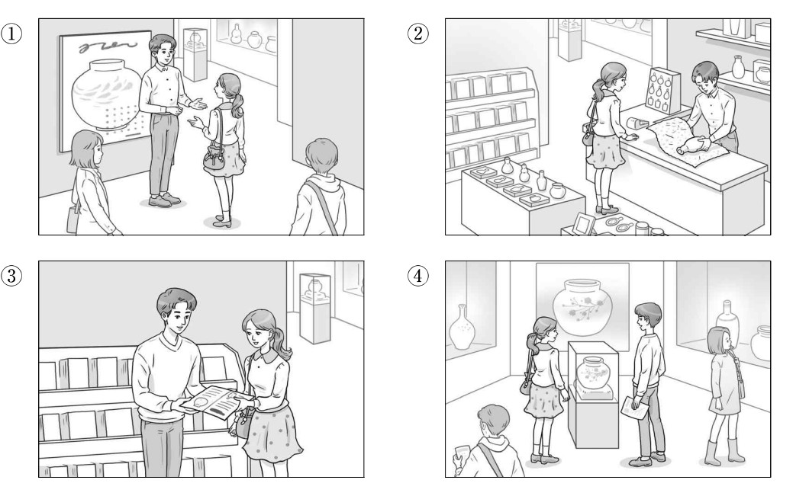
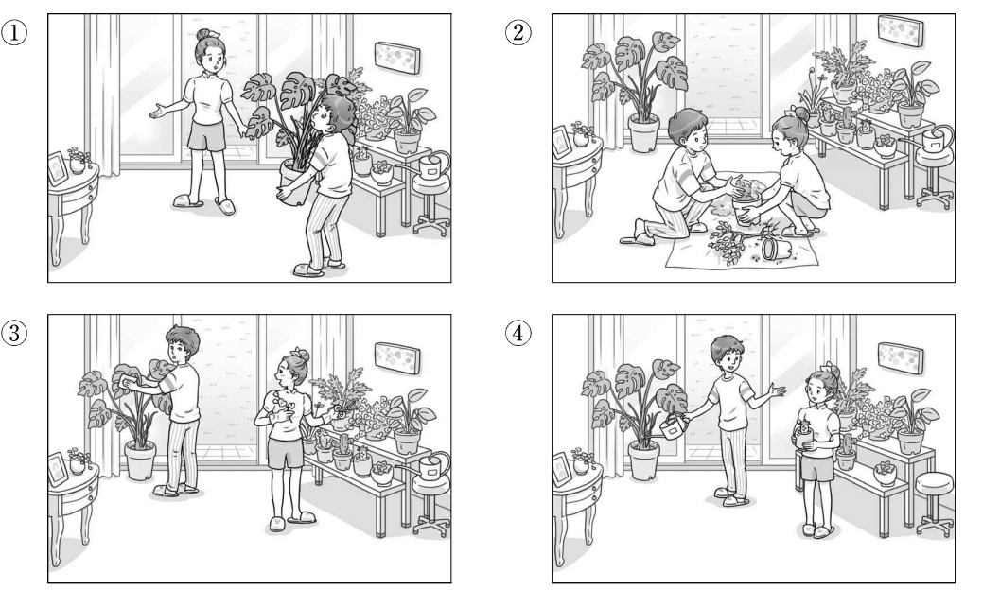
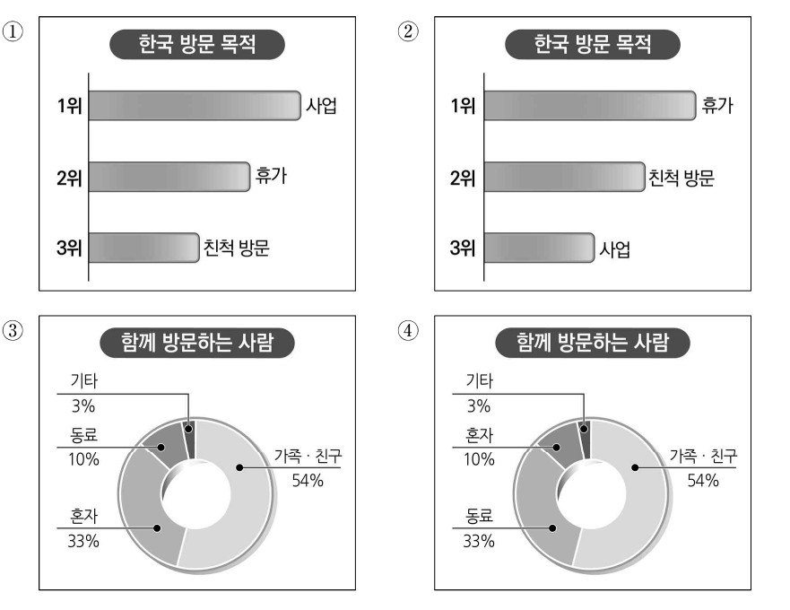

👨 남자: 잠시만 기다려 주세요. 곧 입장 시작합니다.
👩 여자: 네. 알겠습니다.
👨 Nam: Xin quý khách vui lòng đợi một lát. Quá trình tiếp nhận khách vào cửa sẽ được bắt đầu ngay bây giờ ạ.
👩 Nữ: Vâng. Tôi hiểu rồi.
🎯 Phân tích đáp án
Tại sao chọn ①? Bối cảnh đoạn hội thoại diễn ra tại lối vào của một khu vực triển lãm (전시장). Người nữ đặt câu hỏi về việc có thể tiến vào trong hay không, và người nam (nhân viên) yêu cầu cô đứng chờ một lát trước khi chính thức mở cửa (잠시만 기다려 주세요). Hình số 1 phác họa chính xác bối cảnh này: Nhân viên nam đang đứng chắn trước lối vào triển lãm, đưa tay ra hiệu yêu cầu người nữ chờ đợi.
- Hình 2 sai vì mô tả cảnh người nữ đang đứng nhìn người nam thực hiện công đoạn gói ghém hàng hóa (như đang trải cuộn giấy hoặc bọc đồ).
- Hình 3 sai vì mô tả cảnh người nam đang giới thiệu hoặc trao cho người nữ một tập tài liệu/sách giới thiệu.
- Hình 4 sai vì mô tả cảnh hai người đã vào bên trong không gian triển lãm và đang đứng xem các hiện vật được trưng bày.

👩 여자: 여기 창문 앞은 어때?
👨 남자: 그래. 거기가 좋겠다.
👩 Nữ: Đặt ở khu vực phía trước cửa sổ chỗ này thì anh thấy thế nào?
👨 Nam: Được đấy. Đặt ở vị trí đó có vẻ rất hợp lý.
🎯 Phân tích đáp án
Tại sao chọn ①? Đoạn hội thoại miêu tả quá trình hai người đang tìm kiếm vị trí để bố trí một chậu cây trồng trong nhà. Người nam đang trực tiếp bưng bê một chậu cây có khối lượng nặng (아, 무거워). Trong khi đó, người nữ hướng dẫn và đề xuất vị trí đặt chậu cây là ở khu vực phía trước cửa sổ (여기 창문 앞은 어때). Hình số 1 phản ánh chuẩn xác nhất diễn biến hành động này: Người nam đang gắng sức ôm chậu cây, còn người nữ đang chỉ tay điều hướng về phía cửa kính.
- Hình 2 sai vì mô tả cảnh cặp đôi đang ngồi dưới sàn cùng nhau tiến hành thao tác trồng lại cây vào chậu, không phải hành động bưng bê di chuyển chậu.
- Hình 3 sai vì mô tả cảnh người nam đang lau dọn lá cây, trong khi người nữ cầm bình tưới để chăm sóc cây trồng, sai lệch hoàn toàn về mặt bối cảnh công việc.
- Hình 4 sai vì mô tả cảnh người nam xách một chiếc bình tưới nhỏ, không hề thể hiện sự nặng nhọc hay việc bưng bê một chậu cây lớn.

🎯 Phân tích đáp án
Tại sao chọn ③? Biểu đồ chính xác bắt buộc phải phản ánh đúng các số liệu thống kê về "Đối tượng đồng hành cùng du khách khi đến Hàn Quốc" (함께 방문하는 사람):
- 가족·친구 (Gia đình, Bạn bè): Chiếm phần lớn nhất với tỷ lệ 54%.
- 혼자 (Một mình): Chiếm tỷ lệ thứ hai với 33%.
- 동료 (Đồng nghiệp): Chiếm tỷ lệ thứ ba với 10%.
Biểu đồ hình tròn (pie chart) ở Hình số 3 đáp ứng chính xác tuyệt đối cấu trúc phân bổ tỷ lệ phần trăm này.
- Hình 1 & 2 sai vì đây là dạng biểu đồ thanh ngang thể hiện dữ liệu về "Mục đích chuyến thăm Hàn Quốc" (한국 방문 목적). Dù có đề cập qua trong bài nhưng yêu cầu tìm biểu đồ phải tương thích với số liệu chi tiết cuối cùng được đưa ra (tỷ lệ %).
- Hình 4 sai vì biểu đồ tròn này đảo lộn sai lệch các con số: Nó hiển thị tỷ lệ của '혼자' (Một mình) là 10% và '동료' (Đồng nghiệp) là 33%, đi ngược lại hoàn toàn với báo cáo thống kê của bản tin.
👨 남자: 응. 재미있어. 근데 언제까지 돌려주면 돼?
👩 여자: _____________________________
👨 Nam: Ừ, vô cùng thú vị. Nhưng mà thời hạn tớ phải gửi trả lại sách cho cậu là trước khi nào thế?
👩 Nữ: ( Cậu cứ thong thả đọc rồi hẵng trả lại tớ cũng được. )
- ① Ngày hôm qua tớ đã hoàn tất việc đọc cuốn sách đó rồi.
- ② Cậu cứ thong thả tận hưởng cuốn sách rồi gửi trả lại tớ cũng được.
- ③ Vừa qua tớ hoàn toàn không sắp xếp được thời gian để đọc sách.
- ④ Xin cậu hãy giới thiệu và đề xuất cho tớ một vài cuốn sách thú vị đi.
🎯 Phân tích đáp án
Tại sao chọn ②? Người nam đưa ra một câu hỏi trực tiếp nhằm xác định thời hạn hoàn trả vật phẩm mượn: "언제까지 돌려주면 돼?" (Thời hạn tớ phải trả lại sách là khi nào?). Để duy trì sự liền mạch của hội thoại, người nữ đóng vai trò là chủ sở hữu cuốn sách bắt buộc phải đưa ra câu trả lời chỉ định thời gian hoặc bộc lộ sự cho phép linh hoạt. Phản hồi "천천히 읽고 돌려줘" (Cậu cứ thong thả đọc rồi trả lại tớ) đáp ứng trọn vẹn yêu cầu giao tiếp này bằng thái độ nhượng bộ thời gian.
- ① Sai vì người "đang đọc sách" là NGƯỜI NAM. Việc người nữ (chủ sách) phán "Hôm qua tớ đã đọc xong rồi" là sự nhầm lẫn vai trò và không giải đáp câu hỏi mượn trả.
- ③ Sai vì nó không cung cấp thông tin giải đáp cho vấn đề "Thời hạn trả sách là bao giờ". Việc người nữ than phiền "Không có thời gian đọc" là một thông tin thừa thãi.
- ④ Sai vì hiện tại người nam ĐANG ĐỌC VÀ KHEN CUỐN SÁCH NGƯỜI NỮ ĐƯA (재미있어), nên việc cô ấy đi ngược lại yêu cầu anh ta "giới thiệu sách hay cho mình" là phi logic trong hoàn cảnh này.
👩 여자: 학교 앞 식당에서 일할 사람을 찾던데요.
👨 남자: _____________________________
👩 Nữ: Tôi có nghe thông tin rằng nhà hàng nằm ở khu vực phía trước cổng trường đang có nhu cầu tuyển dụng nhân sự đấy.
👨 Nam: ( Thật vậy sao? Tôi nghĩ mình phải đến đó tìm hiểu thử một chuyến mới được. )
- ① Thật vậy sao? Tôi nghĩ mình phải đến đó tìm hiểu thử một chuyến mới được.
- ② Tất nhiên rồi. Tôi đã ký kết thỏa thuận sẽ chính thức làm việc từ ngày mai.
- ③ Thật vậy sao? Nếu cảm thấy quá sức, bạn hoàn toàn có thể từ bỏ công việc bất cứ lúc nào.
- ④ Cô nói đúng. Việc tìm kiếm được một nơi làm việc lý tưởng khiến tâm trạng tôi vô cùng phấn chấn.
🎯 Phân tích đáp án
Tại sao chọn ①? Người nam đang bộc lộ sự bế tắc vì chưa tìm được việc làm thêm (아직 못 구했어요). Đáp lại, người nữ đóng vai trò là một "người cung cấp thông tin", gợi ý về một cơ hội việc làm tại nhà hàng gần trường. Đứng trước một thông tin mang tính hỗ trợ vô cùng hữu ích, phản ứng mang tính logic nhất của người đi tìm việc là bày tỏ sự ngạc nhiên và quyết định tiếp cận cơ hội đó. Lời đáp "그래요? 한번 가 봐야겠어요" (Vậy sao? Để tôi qua đó xem thử) thể hiện trọn vẹn tiến trình tiếp nhận thông tin và định hướng hành động.
- ② Sai vì người nam VỪA MỚI THAN THỞ LÀ CHƯA TÌM ĐƯỢC VIỆC (아직 못 구했어요). Việc đưa ra tuyên bố "Ngày mai đi làm luôn" là sự mâu thuẫn hoàn toàn với xuất phát điểm.
- ③ Sai vì người nữ đang cung cấp cơ hội việc làm cho người nam. Lời khuyên răn "Nghỉ việc nếu thấy mệt mỏi" (언제든지 그만두세요) nên là câu nói dành cho người ĐÃ CÓ VIỆC VÀ ĐANG GẶP ÁP LỰC, không phù hợp cho bối cảnh hiện tại.
- ④ Sai vì người nam VẪN ĐANG THẤT NGHIỆP, anh ta chưa tham gia phỏng vấn hay được nhận vào làm tại nhà hàng đó, do vậy không thể tự đắc khoe khoang "Tìm được nơi làm việc lý tưởng" (좋은 곳을 구해서) được.
👨 남자: 난 파란색하고 하얀색 둘 다 마음에 드는데, 뭐가 더 괜찮아?
👩 여자: _____________________________
👨 Nam: Tớ thì đang rất ưng ý cả hai phiên bản màu xanh dương và màu trắng, theo mắt thẩm mỹ của cậu thì đôi nào trông ổn áp hơn?
👩 Nữ: ( Xét về mặt thẩm mỹ, tớ thấy màu xanh dương tôn dáng và phù hợp với cậu hơn đấy. )
- ① Nếu vậy thì chúng ta hãy di chuyển đi đổi sang một đôi màu trắng nhé.
- ② Tớ dự định sẽ tiến hành mang thử thêm một vài đôi giày thể thao khác nữa.
- ③ Tớ vô cùng ưng ý với thiết kế của đôi giày thể thao vừa mới tậu được này.
- ④ Xét về mặt thẩm mỹ, tớ thấy màu xanh dương tôn dáng và phù hợp với cậu hơn đấy.
🎯 Phân tích đáp án
Tại sao chọn ④? Người nam đang rơi vào trạng thái phân vân giữa hai lựa chọn (màu xanh dương và màu trắng) và đã trực tiếp nhờ người nữ đưa ra lời khuyên thẩm mỹ: "뭐가 더 괜찮아?" (Cậu thấy đôi nào ổn hơn?). Trách nhiệm bắt buộc của người nữ trong lượt lời tiếp theo là phải cung cấp một sự lựa chọn rõ ràng đi kèm với nhận xét cá nhân. Lời phản hồi "파란색이 너한테 더 잘 어울려" (Màu xanh dương trông hợp với cậu hơn đấy) vừa đáp ứng tiêu chí lựa chọn, vừa thể hiện sự tư vấn chân thành.
- ① Sai vì người nam VẪN CHƯA MUA BẤT KỲ ĐÔI GIÀY NÀO, anh ta đang trong bước "phân vân chọn lựa". Việc đưa ra đề xuất "Đi đổi (trả) sang màu trắng" (바꾸러 가자) là sai quy trình mua sắm vật lý.
- ② Sai vì người nam đang chờ đợi LỜI KHUYÊN CHO BẢN THÂN MÌNH. Việc người nữ chỉ tập trung ích kỷ vào bản thân: "Tớ đi thử thêm giày khác đây" (나는 다른 운동화도 신어 볼래) là hành vi thiếu lịch sự và trốn tránh câu hỏi.
- ③ Sai vì giao dịch mua bán CHƯA ĐƯỢC HOÀN TẤT, cả hai vẫn đang chọn hàng. Câu cảm thán "Hài lòng với đôi giày VỪA MỚI MUA" (새로 산 운동화) là sai thì của hành động.
👨 남자: 그래요? 올해도 작년만큼 비가 많이 올까요?
👩 여자: _____________________________
👨 Nam: Thật vậy sao? Liệu lượng mưa trút xuống trong năm nay có chạm mức khủng khiếp như đợt năm ngoái không nhỉ?
👩 Nữ: ( Theo như dự báo thì lượng mưa ghi nhận sẽ duy trì ở mức tương đương xấp xỉ so với năm ngoái đấy. )
- ① Bản tin dự báo rằng những cơn mưa dầm dề này sẽ nhanh chóng chấm dứt thôi.
- ② Biết thế này thì tôi đã dành thời gian để theo dõi bản tin dự báo thời tiết trước.
- ③ Kể từ khi mùa mưa kết thúc, nền nhiệt độ đã gia tăng tạo nên một bầu không khí thực sự oi bức.
- ④ Theo như dự báo thì lượng mưa ghi nhận sẽ duy trì ở mức tương đương xấp xỉ so với năm ngoái đấy.
🎯 Phân tích đáp án
Tại sao chọn ④? Người nam đã đưa ra một câu hỏi nghi vấn mang tính chất so sánh: "올해도 작년만큼 비가 많이 올까요?" (Liệu năm nay mưa có nhiều như năm ngoái không nhỉ?). Để duy trì luồng giao tiếp, người nữ (người đã xem bản tin) cần phải cung cấp một thông tin so sánh tương ứng giữa lượng mưa của năm nay và năm ngoái. Phản hồi "작년하고 거의 비슷할 거래요" (Dự báo là lượng mưa cũng xấp xỉ như năm ngoái) đáp ứng một cách hoàn hảo và chuẩn xác nhất cho câu hỏi mang tính chất đối chiếu số liệu này.
- ① Sai vì người nữ vừa mới thông báo là MÙA MƯA CHỈ MỚI CHUẨN BỊ BẮT ĐẦU VÀO CUỐI TUẦN (주말부터 장마가 시작된대요). Việc phán "Mưa sắp tạnh rồi" (비가 곧 그칠 거래요) là hoàn toàn sai lệch mốc thời gian khí tượng.
- ② Sai vì người nữ chính là người ĐÃ TRỰC TIẾP XEM BẢN TIN THỜI SỰ (뉴스에서 봤는데) để mang thông tin đi báo cho người nam. Lời hối tiếc "Biết thế thì tôi đã xem dự báo" là sự phủ định lại chính hành vi của cô ấy.
- ③ Sai vì thời điểm hiện tại MÙA MƯA CÒN CHƯA BẮT ĐẦU, không thể đưa ra nhận định về trạng thái thời tiết "Sau khi mùa mưa kết thúc" (장마가 끝나니까).
👩 여자: 죄송합니다. 주문량이 많아서 배송이 늦어지고 있습니다.
👨 남자: _____________________________
👩 Nữ: Chúng tôi xin gửi lời tạ lỗi chân thành nhất đến quý khách. Do số lượng đơn đặt hàng đổ về hệ thống quá lớn nên tiến độ vận chuyển giao hàng hiện đang bị chậm trễ ạ.
👨 Nam: ( Phiền cô có thể rà soát lại hệ thống và cung cấp cho tôi thời điểm giao hàng dự kiến được không? )
- ① Thật là một điều vô cùng may mắn khi đơn hàng chuẩn bị được bàn giao tới tay tôi.
- ② Bằng sự quan sát của bản thân, tôi cho rằng sản phẩm này đang tồn tại những khiếm khuyết nhất định.
- ③ Phiền cô có thể rà soát lại hệ thống và cung cấp cho tôi thời điểm giao hàng dự kiến được không?
- ④ Cô có thể vui lòng cung cấp cho tôi thông tin về đường dây nóng của Trung tâm chăm sóc khách hàng được không?
🎯 Phân tích đáp án
Tại sao chọn ③? Bối cảnh hội thoại xoay quanh một tình huống khiếu nại về việc chậm trễ giao hàng. Người nam (khách hàng) yêu cầu giải trình, và người nữ (nhân viên) xác nhận sự chậm trễ do quá tải đơn hàng. Đứng trước sự thật là hàng bị giao chậm, phản ứng mang tính phòng vệ quyền lợi thiết thực nhất của khách hàng là phải yêu cầu phía dịch vụ cam kết một mốc thời gian cụ thể mới. Lời yêu cầu "언제쯤 배송될지 확인해 주시겠어요?" (Xin cô kiểm tra giúp xem khoảng khi nào hàng sẽ được giao?) thể hiện thái độ xử lý vấn đề chuẩn xác của một người tiêu dùng.
- ① Sai vì nhân viên chăm sóc khách hàng chỉ mới nêu lên lý do "Giao hàng bị chậm trễ" (배송이 늦어지고 있습니다), HOÀN TOÀN CHƯA ĐƯA RA BẤT KỲ MỘT LỜI HỨA HẸN NÀO về việc "Sắp giao tới nơi rồi". Lời cảm thán "May mắn vì hàng sắp đến" là sự ảo tưởng sai thực tế.
- ② Sai vì người nam VẪN CHƯA NHẬN ĐƯỢC MÓN HÀNG TRÊN TAY (아직 안 와서요). Việc đưa ra phán xét "Sản phẩm bị lỗi" (제품에 문제가 있는 것 같아요) là phi logic khi chưa được tận mắt kiểm chứng hàng hóa.
- ④ Sai vì người nam HIỆN TẠI ĐANG TRỰC TIẾP NÓI CHUYỆN QUA ĐIỆN THOẠI VỚI CHÍNH TỔNG ĐÀI CHĂM SÓC KHÁCH HÀNG (고객 센터죠?). Hành vi "Xin số điện thoại tổng đài" là một sự ngớ ngẩn trong hoàn cảnh này.
👨 남자: 자르는 건 내가 할 테니까 거기 있는 냄비 좀 줄래?
👩 여자: 여기 있어. 근데 잼 만들려면 설탕이 더 필요하겠네. 내가 찾아올까?
👨 남자: 응. 좀 갖다 줘.
👨 Nam: Công đoạn thái gọt cứ để tôi tự tay đảm nhận cho, cô vui lòng lấy giúp tôi chiếc nồi đang để đằng kia được không?
👩 Nữ: Chiếc nồi của anh đây. Thế nhưng để ninh thành mứt thì dường như lượng đường hiện tại là không đủ đâu. Để tôi chạy đi tìm lấy thêm một ít nữa nhé?
👨 Nam: Được thôi. Cô lấy mang ra đây giúp tôi với.
- ① Thực hiện công đoạn rửa sạch táo.
- ② Tiến hành thao tác dùng dao cắt gọt hoa quả.
- ③ Di chuyển đi tìm và mang nguyên liệu đường đến.
- ④ Tiến hành tìm kiếm và lấy một chiếc nồi mang ra.
🎯 Phân tích đáp án
Tại sao chọn ③? Đề bài yêu cầu xác định "Hành động TIẾP THEO của người nữ". Ở phần cuối cuộc đàm thoại, sau khi nhận thấy sự thiếu hụt nguyên liệu, người nữ đã chủ động đề xuất nhận lãnh nhiệm vụ: "설탕이 더 필요하겠네. 내가 찾아올까?" (Cần thêm đường đấy. Để tôi đi tìm mang ra nhé?). Người nam lập tức đồng ý phê duyệt: "응. 좀 갖다 줘" (Ừ. Cô lấy mang ra giúp tôi). Theo logic tiến trình sự việc, hành động ngay lập tức tiếp theo mà người nữ bắt buộc phải thi hành là Đi lấy thêm đường (설탕을 가져온다). Đáp án ③ tuân thủ chính xác tiến độ công việc.
- ① Sai vì công đoạn rửa táo đã được người nữ HOÀN TẤT TỪ TRƯỚC RỒI (사과는 다 씻었고).
- ② Sai vì nhiệm vụ cắt gọt hoa quả (자르는 건) đã được NGƯỜI NAM xung phong giành lấy và đảm nhận (내가 할 테니까).
- ④ Sai vì người nữ đã CẦM CHIẾC NỒI TRAO TẬN TAY CHO NGƯỜI NAM (여기 있어 - Nó đây này) ngay từ đoạn hội thoại trước đó. Hành động đi lấy nồi đã trở thành quá khứ.
👩 여자: 네. 여기요. 모자는 쓰고 타도 돼요?
👨 남자: 그것도 날아갈 수 있으니까 같이 보관해 드릴게요.
👩 여자: 알겠습니다.
👩 Nữ: Vâng, tôi gửi túi xách đây ạ. Cho tôi hỏi thêm là tôi có được phép đội nguyên chiếc mũ này trên đầu khi tham gia trò chơi không?
👨 Nam: Do chiếc mũ cũng mang nguy cơ rủi ro bị thổi bay mất trong quá trình thiết bị vận hành, nên chúng tôi sẽ tiến hành thu giữ và bảo quản nó cùng với túi xách của quý khách luôn ạ.
👩 Nữ: Tôi hiểu rồi ạ.
- ① Thực hiện thao tác cởi chiếc mũ đang đội trên đầu ra.
- ② Tiến bước lên tham gia trải nghiệm thiết bị vui chơi.
- ③ Thực hiện thao tác cúi nhặt một món đồ vật bị rơi vãi dưới đất.
- ④ Nhận lại chiếc túi xách từ tay của người nam.
🎯 Phân tích đáp án
Tại sao chọn ①? Yêu cầu tìm "Hành động TIẾP THEO của người nữ". Ở phần cuối, khi người nữ hỏi xin phép đội mũ lên trò chơi, nhân viên nam đã đưa ra một yêu cầu cấm cản vì lý do an toàn: "그것도 날아갈 수 있으니까 같이 보관해 드릴게요" (Mũ cũng có thể bị bay nên để tôi bảo quản giúp luôn cho). Người nữ tuân thủ luật lệ và đồng ý: "알겠습니다" (Tôi hiểu rồi). Để có thể giao nộp chiếc mũ cho nhân viên bảo quản, hành động vật lý bắt buộc mà cô ấy phải làm ngay lập tức là Tháo chiếc mũ trên đầu ra (모자를 벗는다). Đáp án ① là sự suy luận logic tuyệt đối.
- ② Sai vì việc "Trèo lên chơi trò chơi" là hành động xảy ra SAU ĐÓ NỮA. Trước mắt cô ấy phải hoàn tất các thủ tục lột bỏ vật dụng trên người (như mũ) để gửi cho bảo vệ cất giữ đã.
- ③ Sai vì lời cảnh báo của nhân viên (날아갈 수 있으니까) là nguy cơ rủi ro "CÓ THỂ XẢY RA TRONG TƯƠNG LAI". Hiện tại chiếc mũ vẫn đang nằm an toàn trên đầu cô ấy, không hề có "đồ vật nào bị rơi dưới đất" để mà phải "cúi xuống nhặt" (떨어진 물건을 줍는다).
- ④ Sai vì người nữ đang GIAO NỘP (KÝ GỬI) TÚI XÁCH CHO NHÂN VIÊN BẢO QUẢN (가방은 여기에 보관하시겠어요?) trước khi lên trò chơi. Cô ấy là người "Đưa" chứ không phải người "Nhận lại" (가방을 받는다) túi xách từ tay nhân viên.
👨 남자: 여기 안내문 있다. 세탁물 넣은 후에 코스 선택하고, 동전 넣으래.
👩 여자: 나 동전은 없는데. 아, 저기 동전 교환기 있네. 바꿔 올게.
👨 남자: 응. 난 또 뭘 해야 되는지 읽어 볼게.
👨 Nam: Ở đây có dán bảng hướng dẫn này. Họ ghi là phải cho quần áo vào máy trước, sau đó mới chọn chế độ giặt rồi nhét tiền xu vào.
👩 Nữ: Tớ lại không có sẵn tiền xu lẻ. À, ở đằng kia có bố trí máy đổi tiền xu kìa. Tớ sẽ đi đổi tiền rồi quay lại nhé.
👨 Nam: Ừ. Tớ sẽ đọc xem chúng ta cần phải thao tác những gì tiếp theo.
- ① Tiến hành bỏ đồ giặt (quần áo) vào máy.
- ② Đọc bảng hướng dẫn sử dụng.
- ③ Di chuyển đi để đổi tiền xu.
- ④ Thực hiện thao tác chọn chế độ giặt.
🎯 Phân tích đáp án
Tại sao chọn ③? Yêu cầu của câu hỏi là xác định "Hành động TIẾP THEO của người nữ". Ở câu thoại của mình, người nữ phát hiện ra vấn đề thiếu tiền xu và ngay lập tức tìm thấy giải pháp: "아, 저기 동전 교환기 있네. 바꿔 올게" (À, đằng kia có máy đổi tiền xu. Tớ sẽ đi đổi tiền rồi quay lại). Do đó, hành động vật lý ngay lập tức tiếp theo mà cô ấy sẽ thực thi là di chuyển đến máy đổi tiền để Đi đổi tiền xu (동전을 바꾸러 간다). Đáp án ③ phản ánh chính xác thông tin này.
- ① Sai vì theo đúng quy trình hướng dẫn, họ phải có tiền xu trước thì máy mới hoạt động. Hiện tại cô ấy phải đi đổi tiền xu trước khi quay lại thực hiện các bước bỏ đồ vào hay chọn chế độ.
- ② Sai vì nhiệm vụ "đọc bảng hướng dẫn xem cần làm gì tiếp theo" (난 또 뭘 해야 되는지 읽어 볼게) là công việc do NGƯỜI NAM tự nguyện đảm nhận.
- ④ Sai vì bước chọn chế độ giặt sẽ được thực hiện SAU KHI người nữ đã đi đổi tiền xu thành công và quay lại máy giặt.
👨 남자: 그럼 카메라 화면에서 어떻게 보이는지 확인해 봅시다. 음, 저 거울이 꼭 필요할까요?
👩 여자: 거울이 커서 그런지 사무실처럼 보이지가 않네요. 치울까요?
👨 남자: 네. 그렇게 해 주세요.
👨 Nam: Nếu vậy thì chúng ta hãy cùng kiểm tra thử xem góc máy hiển thị trên màn hình camera trông như thế nào nhé. Ừm, chiếc gương đằng kia liệu có thực sự cần thiết cho cảnh quay này không?
👩 Nữ: Có lẽ do chiếc gương có kích thước quá lớn nên khung cảnh trông không giống một văn phòng làm việc cho lắm. Tôi mang cất nó đi nhé?
👨 Nam: Vâng. Cô hãy làm vậy đi.
- ① Tiến hành cất dọn chiếc gương đi nơi khác.
- ② Thực hiện thao tác lắp đặt máy quay phim.
- ③ Nhìn và kiểm tra màn hình của máy quay phim.
- ④ Mang các đạo cụ dùng để ghi hình đến.
🎯 Phân tích đáp án
Tại sao chọn ①? Người nam (Đạo diễn) băn khoăn về sự tồn tại của chiếc gương trong khung hình. Đứng trước sự không hài lòng đó, người nữ đã chủ động đề xuất phương án xử lý: "치울까요?" (Tôi mang cất nó đi nhé?). Người nam lập tức phê duyệt yêu cầu này: "네. 그렇게 해 주세요" (Vâng. Cô hãy làm vậy đi). Do đó, hành động vật lý tiếp theo mà người nữ bắt buộc phải thi hành là Dọn dẹp chiếc gương (거울을 치운다). Đáp án ① là sự suy luận logic tuyệt đối.
- ② Sai vì người nữ đã báo cáo ngay từ đầu: "촬영 준비 끝났습니다" (Công tác chuẩn bị quay phim ĐÃ HOÀN TẤT), tức là máy móc thiết bị đã được setup xong xuôi.
- ③ Sai vì hành động "kiểm tra màn hình máy quay" (카메라 화면에서... 확인해 봅시다) là lời rủ rê của ĐẠO DIỄN NAM, và sau khi nhìn vào màn hình thì ông ấy mới nhận ra vấn đề của chiếc gương.
- ④ Sai vì người nữ đã xác nhận: "물건들도 제자리에 놓았고요" (Các đạo cụ đồ vật ĐÃ ĐƯỢC BỐ TRÍ VÀO ĐÚNG VỊ TRÍ). Công đoạn mang đồ vật đến đã trở thành quá khứ.
👨 남자: 와, 정말 잘 만들었다. 근데 뭐로 만든 거야? 나무인가?
👩 여자: 아니. 가죽으로 만든 거래.
👨 남자: 신기하다. 가죽을 이용해서 배 모형을 만들다니. 직접 한번 보고 싶다.
👨 Nam: Chà, tay nghề chế tác tinh xảo thực sự. Nhưng mà nó được làm bằng chất liệu gì vậy? Bằng gỗ à?
👩 Nữ: Không đâu. Nghe bảo là nó được chế tác bằng da đấy.
👨 Nam: Thật sự rất thần kỳ. Việc ứng dụng chất liệu da để chế tác nên một mô hình thuyền cơ đấy. Tớ muốn được tận mắt chiêm ngưỡng trực tiếp tác phẩm này một lần quá.
- ① Hiện tại hai người này đang trong quá trình tự tay chế tác mô hình thuyền.
- ② Mô hình chiếc thuyền này được chế tác bằng chất liệu da.
- ③ Người nữ đang quan sát bức ảnh do người nam cung cấp cho mình.
- ④ Người nam đã từng có kinh nghiệm được trực tiếp chiêm ngưỡng mô hình thuyền này.
🎯 Phân tích đáp án
Tại sao chọn ②? Người nam đặt câu hỏi tò mò về chất liệu cấu thành nên tác phẩm mô hình trong bức ảnh (근데 뭐로 만든 거야?). Người nữ đã đưa ra câu trả lời cung cấp thông tin vô cùng rõ ràng: "아니. 가죽으로 만든 거래" (Không. Nghe bảo là nó được làm bằng da đấy). Thông tin này chứng thực hoàn toàn độ chính xác của đáp án ②: "Mô hình thuyền này được làm bằng da (이 모형 배는 가죽으로 만들어졌다)".
- ① Sai vì hai người họ chỉ đang XEM MỘT BỨC ẢNH VỀ MÔ HÌNH (이 사진 좀 볼래?) do người khác làm ra, chứ họ không phải là những nghệ nhân đang tự tay "chế tác mô hình" (만드는 중이다).
- ③ CẨN THẬN BẪY CHỦ THỂ: Người chủ động đưa bức ảnh ra và hỏi "Cậu xem bức ảnh này đi?" (이 사진 좀 볼래?) là NGƯỜI NỮ. Việc đáp án bảo "Người nữ đang xem bức ảnh do người NAM ĐƯA CHO" (남자가 준 사진을 보고 있다) là đảo ngược vị thế người cung cấp thông tin.
- ④ Sai vì người nam đã thốt lên lời ao ước ở câu chốt: "직접 한번 보고 싶다" (Tớ MUỐN được trực tiếp xem nó một lần). Sự khao khát này chứng tỏ từ trước đến nay anh ta CHƯA TỪNG được tận mắt nhìn thấy hiện vật thực tế (본 적이 있다 - Đã từng thấy là sai sự thật).
- ① Sự kiện Lễ khai mạc sẽ được tổ chức ngay tại bên trong hội trường thi đấu.
- ② Khán giả được phép sử dụng thiết bị để quay phim chụp ảnh các phân cảnh của giải đấu.
- ③ Các trận tranh tài vòng loại sẽ chính thức được khởi tranh vào lúc 2 giờ.
- ④ Ngay sau khi Lễ khai mạc kết thúc, các thí sinh bắt buộc phải di chuyển trở lại phòng chờ.
🎯 Phân tích đáp án
Tại sao chọn ①? Loa phát thanh đã thông báo về Lễ khai mạc (개회식이 열립니다) và ngay lập tức đưa ra chỉ thị điều hướng đám đông: "대기실에 계신 참가자들은 대회장으로 오시기 바랍니다" (Các thí sinh đang ở phòng chờ vui lòng di chuyển đến HỘI TRƯỜNG THI ĐẤU). Việc điều động toàn bộ thí sinh tập trung về Hội trường thi đấu để tham dự buổi lễ chứng tỏ "Lễ khai mạc được diễn ra tại Hội trường thi đấu (개회식은 대회장에서 열린다)". Đáp án ① là một sự suy luận không gian hoàn toàn chính xác.
- ② Sai vì quy chế của giải đấu mang tính thiết quân luật: "대회 중에는 촬영을 할 수 없으니" (KHÔNG ĐƯỢC PHÉP quay phim chụp ảnh trong lúc thi đấu). Đáp án bảo "Có thể quay chụp" (찍을 수 있다) là xúi giục vi phạm quy chế.
- ③ CẨN THẬN BẪY MỐC THỜI GIAN: Sự kiện diễn ra vào lúc 2 GIỜ (두 시) là LỄ KHAI MẠC (개회식). Vòng loại (예선 경기) chỉ được bắt đầu SAU KHI LỄ KHAI MẠC ĐÃ KẾT THÚC (개회식이 끝나는 대로). Gắn mốc 2 giờ cho vòng loại là sai lịch trình.
- ④ Sai vì loa thông báo yêu cầu: Vòng loại sẽ diễn ra sau lễ khai mạc, "그 자리에서 기다려 주십시오" (Xin hãy ĐỢI NGAY TẠI CHỖ/TẠI VỊ TRÍ ĐÓ). Tức là cứ đứng yên ở hội trường thi đấu, tuyệt đối không có lệnh "bắt phải đi về phòng chờ" (대기실로 가야 한다) nào được ban hành.
- ① Sự cố tai nạn này được xác định là phát sinh vào khung giờ buổi sáng.
- ② Toàn bộ tất cả các thành viên trong nhóm người leo núi đều đã được giải cứu an toàn.
- ③ Lực lượng chức năng dự kiến sẽ tiến hành điều tra để làm rõ nguyên nhân gây ra tai nạn.
- ④ Sự cố tai nạn xảy ra trong quá trình nhóm người này đang leo lên phía đỉnh núi.
🎯 Phân tích đáp án
Tại sao chọn ②? Bản tin cung cấp dữ liệu cuối cùng về chiến dịch cứu hộ một cách vô cùng rõ ràng: "두 시간 만에 등산객 모두를 발견했습니다" (Chỉ sau 2 tiếng đã phát hiện ra TOÀN BỘ những người leo núi). Cùng với tuyên bố ngay ở câu đầu "네 명이 구조됐습니다" (Đã cứu được 4 người). Việc tìm thấy toàn bộ 4 người đi lạc đồng nghĩa với việc "Tất cả những người leo núi đều đã được giải cứu (등산객들은 모두 구조되었다)". Đáp án ② là sự tóm tắt sự kiện hoàn toàn chính xác.
- ① Sai vì mốc thời gian xảy ra sự việc được báo cáo rõ ràng là 10 GIỜ ĐÊM QUA (어젯밤 열시). Việc đáp án phán là xảy ra vào "Buổi sáng" (오전에) là sai sự thật.
- ③ CẨN THẬN BẪY TỪ VỰNG: Nguyên nhân gây ra sự cố đã ĐƯỢC XÁC NHẬN XONG XUÔI RỒI (날이 어두워져 길을 잃은 것으로 확인됐습니다 - Đã được xác nhận là do trời tối nên lạc đường). Mọi thứ đã sáng tỏ, không cần phải lập kế hoạch đi "điều tra nguyên nhân trong tương lai" (원인을 조사할 예정이다) nữa.
- ④ CẨN THẬN BẪY CHIỀU DI CHUYỂN: Sự cố xảy ra khi họ đang trên đường TỪ ĐỈNH NÚI ĐI XUỐNG DƯỚI (산 정상에서 내려오던 중). Việc đáp án ④ đảo ngược chiều di chuyển thành "Đang leo lên trên đỉnh núi" (산 정상에 오르다가) là một cái bẫy trí mạng.
👩 여자: 우리 주변의 흔하고 평범한 소재를 따뜻하게 그리기 때문이 아닐까요? 저는 행복했던 어린 시절을 기억하고 싶어서 70세가 넘어서야 그림을 그리기 시작했어요. 물론 배운 적도 없고요. 꾸미지 않은 그런 느낌을 사람들이 좋아해 주는 것 같아요.
👩 Nữ (Họa sĩ): Có lẽ nguyên nhân xuất phát từ việc tôi luôn phác họa lại những chất liệu vô cùng quen thuộc và bình dị xung quanh cuộc sống của chúng ta bằng một lăng kính ấm áp chăng? Vốn dĩ, chỉ vì khao khát muốn lưu giữ lại những ký ức về một tuổi thơ hạnh phúc, mà phải đến tận khi bước qua tuổi 70, tôi mới chính thức bắt đầu cầm cọ vẽ. Đương nhiên là tôi cũng chưa từng trải qua bất kỳ một trường lớp đào tạo chuyên môn nào cả. Tôi nghĩ rằng, chính cái cảm giác mộc mạc, không hề tô vẽ hoa mỹ ấy lại là thứ chạm đến trái tim và khiến mọi người yêu thích.
- ① Nữ họa sĩ đã từng trải qua một quá trình được đào tạo học vẽ chuyên nghiệp.
- ② Các tác phẩm hội họa của người nữ mang lại cho người xem một cảm giác vô cùng lộng lẫy và hoa mỹ.
- ③ Tác giả nữ này đã bắt đầu theo đuổi con đường làm họa sĩ được hơn 70 năm rồi.
- ④ Nữ họa sĩ chuyên lấy những sự vật bình dị, đời thường để làm chất liệu sáng tác cho tranh của mình.
🎯 Phân tích đáp án
Tại sao chọn ④? Để lý giải cho sự nổi tiếng của mình, nữ họa sĩ đã tự đánh giá về phong cách nghệ thuật cá nhân: "우리 주변의 흔하고 평범한 소재를 따뜻하게 그리기 때문이 아닐까요?" (Có lẽ do tôi vẽ những chất liệu (chủ đề) BÌNH DỊ, QUEN THUỘC xung quanh chúng ta chăng?). Việc sử dụng những thứ quen thuộc xung quanh làm đối tượng phác họa chính là "Lấy những thứ bình dị làm chất liệu hội họa (평범한 것을 그림의 소재로 삼는다)". Đáp án ④ lột tả chính xác 100% phong cách của bà.
- ① Sai vì bà cụ đã thật thà thú nhận: "물론 배운 적도 없고요" (Đương nhiên là TÔI CHƯA TỪNG HỌC QUA trường lớp nào). Việc đáp án phán bà "học vẽ chuyên nghiệp" (전문적으로 그림을 배웠다) là sai sự thật.
- ② CẨN THẬN BẪY ĐỐI LẬP: Tranh của bà cuốn hút người xem chính bởi CẢM GIÁC MỘC MẠC KHÔNG TÔ VẼ HOA MỸ (꾸미지 않은 그런 느낌). Chữ "lộng lẫy, rực rỡ, hoa mỹ" (화려한) trong đáp án ② là kẻ thù đối nghịch với phong cách của bà.
- ③ CẨN THẬN BẪY LẬT NGƯỢC LOGIC SỐ: Bà cụ nói "70세가 넘어서야 그림을 그리기 시작했어요" (BƯỚC QUA TUỔI 70 thì tôi MỚI BẮT ĐẦU VẼ). Tức là bà ấy mới vào nghề lúc về già. Việc đáp án ③ lấp liếm thành "Bà ấy ĐÃ LÀM HỌA SĨ ĐƯỢC 70 NĂM (THÂM NIÊN 70 NĂM)" (화가가 된 지 70년이 넘었다) là một cú lừa ngoạn mục về câu chữ.
👩 여자: 아니. 받았어. 어떻게 쓸까 생각하느라고 아직 답장을 못 보냈어.
👨 남자: 난 메일이 안 갔나 걱정했어. 기다렸는데 받았다는 말이라도 해 주지.
👩 Nữ: Không đâu. Tớ đã nhận được rồi. Tại tớ mải suy nghĩ xem nên hồi âm như thế nào cho hợp lý nên mới chần chừ chưa gửi thư trả lời lại cho cậu đấy.
👨 Nam: Tớ đã vô cùng lo lắng, cứ ngỡ là hệ thống bị lỗi nên email không gửi đi được. Dù sao thì trong lúc bắt tớ phải chờ đợi, ít nhất cậu cũng nên thông báo một tiếng cho tớ biết là cậu đã nhận được thư rồi chứ.
- ① Chúng ta cần phải thiết lập thói quen thường xuyên kiểm tra hộp thư email.
- ② Tốt hơn hết là cứ nên kiên nhẫn chờ đợi cho đến khi nào có thư phản hồi gửi tới.
- ③ Bắt buộc phải đưa ra một lời thông báo nhằm báo cáo sự thật rằng bản thân đã nhận được email.
- ④ Phương án tốt nhất là nên rà soát và kiểm tra kỹ lưỡng nội dung trước khi bấm nút gửi thư trả lời.
🎯 Phân tích đáp án
Tại sao chọn ③? Yêu cầu tìm "Suy nghĩ trọng tâm của người Nam". Người nam đang vô cùng bức xúc vì người nữ đã đọc email nhưng lại im lặng ngâm thư mà không phản hồi. Sự bức xúc này được chốt hạ bằng một câu trách móc mang tính định hướng hành vi: "기다렸는데 받았다는 말이라도 해 주지" (Bắt tớ phải chờ đợi, ÍT NHẤT CẬU CŨNG PHẢI NÓI CHO TỚ BIẾT LÀ CẬU ĐÃ NHẬN ĐƯỢC RỒI CHỨ). Câu nói này thể hiện quan điểm rõ ràng của người nam về phép lịch sự trong giao tiếp kỹ thuật số: "Dù chưa rảnh để trả lời dài, thì cũng PHẢI THÔNG BÁO CHO ĐỐI PHƯƠNG RẰNG MÌNH ĐÃ NHẬN ĐƯỢC MAIL (메일을 받은 사실을 알려 줘야 한다)". Đáp án ③ ôm trọn toàn bộ bức xúc này.
- ① Sai vì vấn đề mấu chốt gây cãi vã không phải là việc người nữ "lười check mail" (cô ấy ĐÃ đọc rồi), mà là cô ấy đọc xong rồi IM LẶNG không báo cáo. Việc khuyên "Thường xuyên kiểm tra mail" (자주 확인해야 한다) là lệch trọng tâm.
- ② Sai vì lập trường của người nam là KHÔNG MUỐN PHẢI CHỜ ĐỢI TRONG HOANG MANG (난 메일이 안 갔나 걱정했어). Anh ta muốn nhận được tín hiệu xác nhận ngay lập tức, trái ngược hoàn toàn với việc nhẫn nhịn "Kiên nhẫn chờ đợi cho đến khi có hồi âm" (답장이 올 때까지 기다리는 게 낫다).
- ④ Sai vì người nữ đang than thở "Chưa biết viết gì nên chưa gửi trả lời" (어떻게 쓸까 생각하느라고). Người nam không hề đóng vai thầy giáo đi dạy cô ấy cách "Phải kiểm tra lỗi chính tả kỹ rồi mới được gửi trả lời" (보내기 전에 확인하는 게 좋다) cả.
👩 여자: 그래? 난 새벽에 일어나면 많이 피곤할 것 같은데.
👨 남자: 처음엔 나도 좀 피곤했는데 이제는 공부가 잘돼서 좋아.
👩 Nữ: Thật á? Nếu bắt tớ phải lọ mọ bật dậy từ lúc rạng sáng thì chắc cả ngày tớ sẽ ngáp ngắn ngáp dài vì kiệt sức mất.
👨 Nam: Ban đầu tớ cũng chịu chung số phận mệt mỏi như cậu, nhưng mà giờ quen rồi thì việc học vào đầu rất mượt mà nên tớ thích lắm.
- ① Đối với việc học tập, yếu tố quan trọng nhất là phải duy trì sự bền bỉ thực hành mỗi ngày.
- ② Nhằm nâng cao hiệu suất, đôi khi chúng ta cần phải linh hoạt thay đổi không gian và địa điểm học tập.
- ③ Việc thức dậy vào lúc tinh mơ rạng sáng để tiến hành học bài là một phương pháp rất tuyệt vời.
- ④ Những khi cơ thể lên tiếng vì mệt mỏi, việc đan xen những khoảng nghỉ ngơi hợp lý là điều vô cùng cần thiết.
🎯 Phân tích đáp án
Tại sao chọn ③? Xuyên suốt đoạn hội thoại, người nam đóng vai trò là đại sứ truyền bá phương pháp học tập mới. Anh ta mở bài bằng một lời khen ngợi: "새벽에 일어나서 공부하는데 집중이 잘되더라" (Thức dậy lúc rạng sáng để học thì TẬP TRUNG TỐT LẮM). Bất chấp sự nghi ngờ và e ngại của người nữ, anh ta vẫn kiên định chốt lại để bảo vệ phương pháp của mình: "이제는 공부가 잘돼서 좋아" (Bây giờ HỌC VÀO ĐẦU LẮM NÊN TỚ THÍCH CỰC KỲ). Sự ca ngợi liên tục này chứng tỏ anh ấy đang bảo vệ quan điểm: "Thức dậy rạng sáng để học là RẤT TỐT (새벽에 일어나서 공부하는 게 좋다)". Đáp án ③ phản chiếu hoàn hảo suy nghĩ này.
- ① Sai vì anh ta đang ca ngợi THỜI ĐIỂM (새벽 - rạng sáng) giúp mang lại sự tập trung. Hoàn toàn không có từ khóa nào nhấn mạnh việc "Phải học MỖI NGÀY/ĐỀU ĐẶN" (매일 하는 것) để xây dựng tính kiên trì cả.
- ② Sai vì bí quyết của người nam nằm ở KHUNG GIỜ (rạng sáng), chứ anh ta không hề khuyên răn người nữ là "Cậu hãy xách cặp ra quán cà phê hay thư viện mà học" (장소를 바꿀 필요).
- ④ CẨN THẬN BẪY ĐỐI LẬP: Sự "mệt mỏi/mất sức" (피곤하다) là cái cớ để NGƯỜI NỮ (피곤할 것 같은데) TỪ CHỐI phương pháp dậy sớm. Mặc dù người nam có thừa nhận ban đầu hơi mệt, nhưng anh ta đã VƯỢT QUA ĐƯỢC VÀ CHỐT LÀ THÍCH NÓ. Việc khuyên "Mệt thì phải nghỉ ngơi" (휴식도 필요하다) là tư tưởng thỏa hiệp không có trong kịch bản của người nam.
👨 남자: 응. 다양한 직업을 가진 사람들의 이야기를 들으니까 참 좋았어.
👩 여자: 맞아. 진로를 결정하는 데에도 꽤 도움이 됐어.
👨 남자: 여러 분야의 사람들을 만나면 배울 것도 많은 것 같아.
👨 Nam: Ừ. Việc được lắng nghe những câu chuyện đời chuyện nghề từ những chuyên gia ở nhiều lĩnh vực đa dạng khác nhau quả thực mang lại cảm giác rất tuyệt.
👩 Nữ: Đồng ý với cậu. Hoạt động đó cũng đóng vai trò như một chất xúc tác hỗ trợ rất lớn cho tớ trong việc định hướng con đường tương lai.
👨 Nam: Tớ nghĩ rằng nếu chúng ta tích cực gặp gỡ và tiếp xúc với những con người ở nhiều lĩnh vực khác nhau, chúng ta sẽ có cơ hội được học hỏi thêm vô vàn những kiến thức vô giá.
- ① Chúng ta cần thiết phải tăng cường gặp gỡ và giao lưu với những con người đến từ nhiều lĩnh vực đa dạng.
- ② Hành vi thường xuyên nhảy việc và thay đổi môi trường công tác là một thói quen không hề tốt đẹp.
- ③ Yếu tố quan trọng tại nơi làm việc là phải duy trì mối quan hệ hòa hảo với những đồng nghiệp làm cùng.
- ④ Chúng ta bắt buộc phải dành một khoảng thời gian đủ dài để trăn trở và cân nhắc kỹ lưỡng về định hướng tương lai.
🎯 Phân tích đáp án
Tại sao chọn ①? "Suy nghĩ trọng tâm" của người nam được kết tinh rực rỡ nhất ở câu cảm thán cuối cùng. Dựa trên trải nghiệm thành công từ buổi giao lưu, anh đã đúc kết lại một bài học sống: "여러 분야의 사람들을 만나면 배울 것도 많은 것 같아" (Tớ nghĩ rằng nếu chúng ta GẶP GỠ NGƯỜI Ở NHIỀU LĨNH VỰC KHÁC NHAU thì sẽ HỌC HỎI ĐƯỢC RẤT NHIỀU). Tức là anh đang đề cao giá trị của việc giao lưu đa ngành nghề. Việc nhận thức được lợi ích to lớn này sẽ dẫn tới kết luận mang tính hành động: "Chúng ta CẦN PHẢI gặp gỡ người ở nhiều lĩnh vực đa dạng (다양한 분야의 사람을 만나야 한다)". Đáp án ① thâu tóm hoàn hảo triết lý này.
- ② Sai vì mặc dù từ "Nghề nghiệp đa dạng" (다양한 직업) có xuất hiện trong bài, nhưng đó là để miêu tả ĐỐI TƯỢNG GIAO LƯU (những người làm nhiều nghề khác nhau). Việc đáp án phán xét "Thường xuyên NHẢY VIỆC là không tốt" (직업을 자주 바꾸는 것은 좋지 않다) là sự bóp méo ngữ nghĩa trầm trọng.
- ③ Sai vì cả hai nhân vật ĐANG LÀ HỌC SINH/SINH VIÊN (진로를 결정하는 데에도 - Giúp ích cho việc ĐỊNH HƯỚNG TƯƠNG LAI), họ đi tham gia sự kiện để nghe người đi làm kể chuyện. Không hề có bối cảnh công sở nào ở đây để mà khuyên "Phải sống hòa thuận với ĐỒNG NGHIỆP" (같이 일하는 사람과 잘 지내야).
- ④ CẨN THẬN BẪY LẬT NGƯỢC CHỦ THỂ: Lợi ích "Giúp ích cho việc ĐỊNH HƯỚNG TƯƠNG LAI" (진로를 결정하는 데에도) là ý kiến khen ngợi của NGƯỜI NỮ. Đề bài yêu cầu tìm suy nghĩ của người Nam. Người nam chỉ tập trung vào việc "Học hỏi được nhiều điều khi gặp nhiều người".
👨 남자: 네. 지명에는 지금은 안 쓰는 옛날 말이 많이 남아 있습니다. 특히 마을의 문화나 자연을 가리키는 말들 중에 무척 아름다운 표현들이 많은데요. 그런 표현들이 다시 우리의 일상으로 들어와 삶의 곳곳에서 사용됐으면 하는 마음으로 책을 쓰게 됐어요.
👨 Nam (Tác giả): Vâng. Hiện nay, ẩn sâu bên trong các địa danh vẫn còn lưu giữ và bảo tồn một khối lượng khổng lồ những ngôn từ cổ xưa mà con người thời hiện đại không còn đụng đến nữa. Đặc biệt, trong số những từ vựng từng được dùng để miêu tả về văn hóa hay cảnh quan thiên nhiên của các ngôi làng, tồn tại vô vàn những cách diễn đạt mang đậm nét đẹp duy mỹ tuyệt vời. Chính vì luôn ấp ủ trong tim một nỗi khao khát được nhìn thấy những cách diễn đạt tuyệt đẹp ấy một lần nữa hồi sinh, len lỏi trở lại vào cuộc sống thường nhật và được người dân sử dụng rộng rãi khắp mọi nơi, mà tôi đã đặt bút viết nên cuốn sách này.
- ① Cần thiết phải tiến hành công cuộc đổi mới và thay tên đổi họ cho các địa danh đã quá đỗi cũ kỹ.
- ② Khi thiết lập địa danh, nguyên tắc bắt buộc là phải ưu tiên sự đơn giản để đông đảo quần chúng có thể dễ dàng tiếp thu.
- ③ Sẽ thật là một điều tuyệt vời nếu như những ngôn từ cổ xưa tuyệt mỹ ẩn chứa trong các địa danh được hồi sinh và sử dụng trở lại.
- ④ Trong quá trình quy hoạch và đặt tên cho các địa danh, bắt buộc phải lồng ghép và phản ánh bản sắc văn hóa của ngôi làng vào đó.
🎯 Phân tích đáp án
Tại sao chọn ③? Yêu cầu tìm "Suy nghĩ trọng tâm của người Nam". Mục đích xuất bản sách - cũng chính là tâm nguyện lớn nhất của tác giả - đã được bộc bạch một cách vô cùng tha thiết ở câu cuối cùng: "그런 (아름다운) 표현들이 다시 우리의 일상으로 들어와 삶의 곳곳에서 사용됐으면 하는 마음으로 책을 쓰게 됐어요" (Tôi viết cuốn sách này với MONG MUỐN RẰNG những CÁCH DIỄN ĐẠT (TUYỆT ĐẸP) đó sẽ một lần nữa ĐƯỢC SỬ DỤNG rộng rãi trong cuộc sống thường nhật của chúng ta). Sự kỳ vọng mong mỏi cái đẹp xưa cũ được hồi sinh này hoàn toàn đồng nhất với đáp án ③: "Mong rằng những từ cổ tuyệt đẹp được dùng trong địa danh sẽ ĐƯỢC SỬ DỤNG TRỞ LẠI (지명에 쓰인 아름다운 옛말이 사용되면 좋겠다)".
- ① Sai vì tác giả đang cố gắng BẢO TỒN VÀ KHƠI GỢI LẠI VẺ ĐẸP CỦA TỪ CỔ (옛날 말). Việc đáp án ① xúi giục ông ta "Thay tên đổi họ, xóa bỏ các địa danh cũ" (오래된 지명을 새롭게 바꿀 필요) là hành vi phá hoại di sản văn hóa, đi ngược lại hoàn toàn với tâm huyết của tác giả.
- ② Sai vì tác giả trân trọng VẺ ĐẸP NGHỆ THUẬT (아름다운 표현) của từ ngữ, ông không hề đưa ra lời khuyên bình dân học vụ là "Phải đặt tên sao cho dễ hiểu nhất có thể" (알기 쉽게 만들어야).
- ④ CẨN THẬN BẪY TỪ VỰNG: Mặc dù từ "Văn hóa" (마을의 문화) có xuất hiện trong bài, nhưng tác giả chỉ dùng nó để MIÊU TẢ THỰC TRẠNG CỦA CÁC ĐỊA DANH CŨ (지명에는... 마을의 문화를 가리키는 말들). Tác giả KHÔNG HỀ đứng trên cương vị cán bộ địa chính để ra chỉ thị cho tương lai rằng "Khi đặt tên MỚI thì PHẢI phản ánh văn hóa vào" (지명을 만들 때는... 반영해야).
👨 남자: '성격과 여행지'라, 성격이 여행지 결정에 미치는 영향을 알아보겠다는 거군요? 주제가 아주 새롭고 좋아요. 연구 방법으로는 설문 조사를 선택했는데 계획이 거의 없네요. 설문 조사는 조사하려는 내용이 분명해야 하니까 조사 대상과 내용을 잘 계획할 필요가 있어요.
👩 여자: 네. 그런데 무엇부터 시작을 하면 좋을지 모르겠어요.
👨 남자: 그럼 성격과 여행지의 유형을 나누는 것부터 시작해 보세요.
👨 Nam: 'Tính cách và điểm đến du lịch' à, như vậy mục tiêu của em là tìm hiểu về mức độ ảnh hưởng của yếu tố tính cách lên quyết định lựa chọn điểm đến du lịch phải không? Đề tài này mang tính đột phá và rất thú vị. Về phương pháp nghiên cứu, em đã lựa chọn phương thức khảo sát bằng bảng hỏi, thế nhưng dường như em vẫn chưa có một bản kế hoạch cụ thể nào cho nó cả. Đối với phương pháp khảo sát bằng bảng hỏi, việc làm rõ nội dung cần điều tra là yếu tố sống còn, do đó em bắt buộc phải thiết lập một kế hoạch thật chặt chẽ và bài bản về đối tượng cũng như nội dung khảo sát.
👩 Nữ: Vâng ạ. Tuy nhiên em vẫn đang khá hoang mang, không biết bản thân nên bắt tay vào thực hiện từ bước nào trước ạ.
👨 Nam: Nếu vậy, trước tiên em hãy tiến hành phân loại các nhóm tính cách và các hình thái điểm đến du lịch xem sao.
- ① Cần thiết phải tiến hành thay đổi chủ đề của cuộc khảo sát.
- ② Đối với phương pháp khảo sát, công đoạn phân tích kết quả đóng vai trò quan trọng nhất.
- ③ Bắt buộc phải thiết lập một bản kế hoạch khảo sát thật chặt chẽ và bài bản.
- ④ Đối với phương pháp khảo sát, số lượng người tham gia trả lời càng đông đảo bao nhiêu thì độ tin cậy càng cao bấy nhiêu.
🎯 Phân tích đáp án
Tại sao chọn ③? Yêu cầu của câu hỏi là xác định "Suy nghĩ trọng tâm của người Nam". Vị giáo sư (người Nam) đã đưa ra lời khuyên mang tính chất định hướng phương pháp luận nghiên cứu cho sinh viên: "설문 조사는... 조사 대상과 내용을 잘 계획할 필요가 있어요" (Đối với khảo sát, cần thiết phải LẬP KẾ HOẠCH một cách bài bản về đối tượng và nội dung). Việc nhấn mạnh tầm quan trọng của khâu chuẩn bị chính là "Phải lập kế hoạch khảo sát thật tốt (설문 조사의 계획을 잘 세워야 한다)". Đáp án ③ thâu tóm hoàn hảo lời chỉ đạo học thuật này.
- ① CẨN THẬN BẪY LẬT NGƯỢC: Giáo sư dành lời khen ngợi nồng nhiệt cho chủ đề nghiên cứu: "주제가 아주 새롭고 좋아요" (Chủ đề RẤT MỚI MẺ VÀ XUẤT SẮC). Việc đáp án ① phán "Cần phải thay đổi chủ đề" (주제를 바꿔야 한다) là một sự bóp méo hoàn toàn đánh giá của giáo sư.
- ② Sai vì hiện tại sinh viên CÒN CHƯA BẮT ĐẦU ĐI KHẢO SÁT (무엇부터 시작을 하면 좋을지 모르겠어요 - Chưa biết bắt đầu từ đâu), làm gì đã có dữ liệu để mà bàn đến khâu "Phân tích kết quả" (결과 분석).
- ④ Sai vì giáo sư chỉ yêu cầu làm rõ "Đối tượng và nội dung" (조사 대상과 내용), tuyệt nhiên không có bất kỳ phát ngôn nào đề cập đến số lượng mẫu nghiên cứu "Càng nhiều người trả lời càng tốt" (응답자 수가 많을수록 좋다).
- ① Người nam hiện đang tiến hành soạn thảo bản đề cương nghiên cứu.
- ② Người nam đang nung nấu dự định thực hiện một công trình nghiên cứu về chủ đề tính cách.
- ③ Tính đến thời điểm hiện tại, người nam vẫn chưa thể ấn định được phương pháp nghiên cứu.
- ④ Người nam đánh giá rằng chủ đề nghiên cứu do người nữ lựa chọn mang tính chất vô cùng mới mẻ và đột phá.
🎯 Phân tích đáp án
Tại sao chọn ④? Khi nhận được bản đề cương từ sinh viên, vị giáo sư đã đưa ra lời nhận xét cực kỳ tích cực: "주제가 아주 새롭고 좋아요" (Chủ đề này rất MỚI MẺ và xuất sắc). Lời đánh giá này chứng minh tuyệt đối cho nhận định ④: "Người nam cho rằng chủ đề nghiên cứu của người nữ rất mới mẻ (남자는 여자의 연구 주제가 새롭다고 생각한다)".
- ①, ② CẨN THẬN BẪY CHỦ THỂ: Người thực hiện nghiên cứu, chọn chủ đề về "Tính cách" và soạn thảo đề cương nghiên cứu (제 연구 계획서인데요) là NGƯỜI NỮ (Sinh viên). Người nam (Giáo sư) chỉ đóng vai trò là người cố vấn học thuật, không phải người trực tiếp làm nghiên cứu.
- ③ Sai vì "Phương pháp nghiên cứu" (nghiên cứu bằng cách đi khảo sát bảng hỏi) là do NGƯỜI NỮ ĐÃ QUYẾT ĐỊNH XONG TỪ TRƯỚC RỒI (연구 방법으로는 설문 조사를 선택했는데), không phải là do người nam "chưa thể quyết định được" (결정하지 못했다).
👩 여자: 네. 확인했습니다. 그런데 건강 검진은 정해진 병원에서만 해야 하나요?
👨 남자: 아닙니다. 집 근처 보건소나 병원에 가서 받으셔도 됩니다. 검진 결과는 연수 끝나고 출근 전까지 내시면 되고요. 신입 사원 연수 때는 문자로 안내 드린 증명서만 제출하시면 됩니다.
👩 여자: 감사합니다. 그럼 연수 때 뵙겠습니다.
👩 Nữ: Vâng, tôi đã kiểm tra rồi ạ. Tuy nhiên, cho tôi hỏi về hạng mục khám sức khỏe, tôi bắt buộc phải tiến hành thăm khám tại một bệnh viện được chỉ định sẵn hay sao ạ?
👨 Nam: Dạ không bắt buộc đâu ạ. Cô hoàn toàn có thể tự do đến thăm khám tại bất kỳ trạm y tế hoặc bệnh viện nào ở khu vực gần nhà. Giấy chứng nhận kết quả khám sức khỏe cô chỉ cần nộp lại cho công ty trong khoảng thời gian sau khi kết thúc khóa đào tạo và trước ngày chính thức nhận việc là được ạ. Còn trong khuôn khổ buổi đào tạo tân binh sắp tới, cô chỉ cần mang nộp các loại giấy tờ chứng nhận đã được liệt kê chi tiết trong tin nhắn là đủ.
👩 Nữ: Tôi hiểu rồi, xin chân thành cảm ơn. Vậy hẹn gặp lại anh vào buổi đào tạo sắp tới ạ.
- ① Đang chia sẻ và giới thiệu về những bí quyết phương pháp giúp bản thân xin việc thành công.
- ② Đang tiến hành điều chỉnh và thay đổi lịch trình của khóa đào tạo nhân viên mới.
- ③ Đang đi sâu vào diễn giải về toàn bộ quy trình các bước tuyển dụng nhân sự mới của doanh nghiệp.
- ④ Đang đưa ra những chỉ dẫn về các hạng mục công việc bắt buộc phải hoàn tất trước khi chính thức nhận việc.
🎯 Phân tích đáp án
Tại sao chọn ④? Người nam (Nhân viên phòng nhân sự) đang gọi điện thoại cho ứng viên trúng tuyển (người nữ) để đôn đốc và hướng dẫn các thủ tục hành chính. Anh ta nhắc nhở cô ấy đi "khám sức khỏe" (건강 검진) và nộp "các giấy tờ chứng nhận" (안내 드린 증명서) vào buổi đào tạo. Đây đều là những thủ tục mang tính bắt buộc mà một người trúng tuyển phải hoàn thiện TRƯỚC KHI ĐI LÀM CHÍNH THỨC (출근 전까지). Việc gọi điện đôn đốc làm thủ tục này chính là hành động "Hướng dẫn những việc cần làm trước khi chính thức nhập công (입사 전에 해야 할 일을 안내하고 있다)". Đáp án ④ tóm tắt hoàn hảo mục đích cuộc gọi.
- ① Sai vì người nam là ĐẠI DIỆN CÔNG TY (인주 상사입니다), anh ta gọi điện thông báo việc làm thủ tục, chứ anh ta không phải là một ứng viên đi chia sẻ "Bí quyết xin việc thành công" (취업에 성공한 방법을 소개) cho người khác.
- ② Sai vì lịch trình ĐÃ ĐƯỢC CHỐT VÀ GỬI TIN NHẮN THÔNG BÁO RÕ RÀNG RỒI (문자로 보내 드렸는데), hoàn toàn không có sự cố nào xảy ra để mà phải gọi điện "Xin thay đổi lịch trình" (일정을 변경하고 있다).
- ③ CẨN THẬN BẪY TIẾN ĐỘ: Người nữ ĐÃ LÀ NGƯỜI TRÚNG TUYỂN (합격자), tức là quá trình thi tuyển (채용 절차 - nộp hồ sơ, phỏng vấn, đánh giá) ĐÃ KẾT THÚC HOÀN TOÀN. Bây giờ là giai đoạn làm thủ tục nhập công (입사), chứ không còn là quy trình tuyển dụng nữa.
- ① Khóa đào tạo tân binh của doanh nghiệp này đã chính thức khép lại.
- ② Lịch trình chi tiết của khóa đào tạo tân binh đã được công ty thông báo rộng rãi thông qua tin nhắn văn bản.
- ③ Công tác khám sức khỏe bắt buộc phải được tiến hành tại một cơ sở y tế do công ty chỉ định độc quyền.
- ④ Ứng viên hoàn toàn có quyền được nộp lại giấy chứng nhận kết quả khám sức khỏe sau khi đã bắt đầu đi làm chính thức.
🎯 Phân tích đáp án
Tại sao chọn ②? Ở ngay câu thoại mở đầu, nhân viên nhân sự đã xác nhận về kênh truyền thông được sử dụng: "건강 검진과 신입 사원 연수 일정을 문자로 보내 드렸는데 확인하셨나요?" (Chúng tôi ĐÃ GỬI lịch trình khám sức khỏe và ĐÀO TẠO TÂN BINH QUA TIN NHẮN, cô đã kiểm tra chưa?). Dữ kiện này chứng minh hoàn toàn tính chính xác của đáp án ②: "Đã công báo lịch trình đào tạo tân binh bằng tin nhắn (신입 사원 연수 일정을 문자로 공지했다)".
- ① Sai vì khóa đào tạo này VẪN CHƯA BẮT ĐẦU (người nữ hẹn "연수 때 뵙겠습니다" - Hẹn gặp lại anh vào hôm đào tạo nhé). Việc đáp án bảo "Khóa đào tạo đã kết thúc" (연수가 끝났다) là sai lệch mốc thời gian.
- ③ CẨN THẬN BẪY LẬT NGƯỢC: Người nữ hỏi có cần khám ở bệnh viện chỉ định không (정해진 병원에서만 해야 하나요?), người nam lập tức phủ định: "아닙니다. 집 근처 보건소나 병원에 가서 받으셔도 됩니다" (KHÔNG Ạ. Khám ở chỗ nào gần nhà cũng được). Đáp án ③ khẳng định "Phải khám ở bệnh viện chỉ định" là bịa đặt quy chế.
- ④ Sai vì người nam đã nhấn mạnh rõ mốc deadline (hạn chót) để nộp kết quả khám sức khỏe là: "연수 끝나고 출근 전까지 내시면 되고요" (Nộp vào thời điểm sau khi kết thúc đào tạo và BẮT BUỘC LÀ TRƯỚC NGÀY ĐI LÀM CHÍNH THỨC). Việc đáp án ④ cho phép nộp "SAU KHI đã đi làm" (출근 후에 제출) là vi phạm quy định hành chính của công ty.
👨 남자: 저는 환경 보호를 위해서는 성능만 강조하는 기존의 타이어 설계에 변화가 필요하다고 생각했습니다. 타이어에서 생기는 작은 플라스틱들이 대기 오염의 가장 큰 원인이 되고 있거든요. 이걸 해결하기 위해 미세 플라스틱 조각이 공기 중으로 날아가지 않고 타이어 안쪽의 캡슐 장치에 모여 저장되도록 설계했습니다. 캡슐이 가득 차면 타이어 옆면의 색이 바뀌어서 운전자가 알 수 있게 했고요.
👨 Nam (Kỹ sư thiết kế): Triết lý thiết kế của tôi bắt nguồn từ nhận thức rằng: Nếu muốn bảo vệ môi trường một cách triệt để, chúng ta bắt buộc phải phá vỡ tư duy thiết kế lốp xe truyền thống - thứ vốn chỉ chăm chăm đặt nặng vào bài toán hiệu năng. Thực trạng hiện nay là những hạt nhựa vi sinh phát sinh do quá trình bào mòn lốp xe đang trở thành thủ phạm hàng đầu đầu độc bầu không khí. Để dập tắt thảm họa này, tôi đã thiết kế ra một cơ chế đặc biệt, cho phép thu gom và lưu trữ toàn bộ các mảnh vụn vi nhựa vào bên trong một hệ thống viên nang (capsule) được tích hợp sẵn ở mặt trong của lốp xe, ngăn chặn tuyệt đối việc chúng phát tán ra ngoài không khí. Thêm vào đó, tôi còn thiết lập một cơ chế cảnh báo thông minh: Khi viên nang chứa đầy rác vi nhựa, bề mặt cạnh bên của lốp xe sẽ tự động chuyển màu để cảnh báo cho người điều khiển phương tiện nhận biết.
- ① Trong quá trình thiết kế lốp xe, vấn đề bảo vệ môi trường bắt buộc phải được đưa vào làm hệ quy chiếu cốt lõi.
- ② Các nhà sản xuất cần thiết phải xây dựng và thiết lập các kho bãi không gian lưu trữ chuyên dụng dành cho lốp xe thành phẩm.
- ③ Các nhà sản xuất bắt buộc phải lắng nghe và lồng ghép những ý kiến đóng góp của giới tài xế vào khâu thiết kế lốp xe.
- ④ Giới khoa học cần phải đẩy mạnh công tác nghiên cứu nhằm phát minh ra các vật liệu mới để ứng dụng làm nguyên liệu chế tạo lốp xe.
🎯 Phân tích đáp án
Tại sao chọn ①? Yêu cầu tìm "Suy nghĩ trọng tâm của người Nam". Ngay từ câu mở đầu giải thích lý do sáng chế, kỹ sư (người nam) đã nêu rõ tôn chỉ của mình: "환경 보호를 위해서는 성능만 강조하는 기존의 타이어 설계에 변화가 필요하다고 생각했습니다" (Vì mục tiêu BẢO VỆ MÔI TRƯỜNG, tôi cho rằng chúng ta cần phải THAY ĐỔI TƯ DUY THIẾT KẾ lốp xe vốn chỉ chăm chăm vào hiệu năng). Việc đưa ra một bản thiết kế mới nhằm giải quyết vấn đề ô nhiễm (bụi mịn từ lốp xe) chính là minh chứng cho tư tưởng: "Khi thiết kế lốp xe, cần phải suy nghĩ đến yếu tố môi trường (타이어를 설계할 때는 환경을 생각해야 한다)". Đáp án ① thâu tóm xuất sắc triết lý thiết kế nhân văn này.
- ② CẨN THẬN BẪY TỪ VỰNG: Kỹ sư có nhắc đến từ "Lưu trữ" (저장), nhưng đó là việc LƯU TRỮ RÁC NHỰA VI SINH BÊN TRONG QUẢ LỐP (미세 플라스틱... 타이어 안쪽의 캡슐에 저장). Việc đáp án ② xuyên tạc thành "Doanh nghiệp phải xây KHO BÃI ĐỂ LƯU TRỮ LỐP XE" (타이어의 저장 공간을 마련해야) là đánh tráo đối tượng một cách tinh vi.
- ③ Sai vì phát minh này XUẤT PHÁT TỪ TRĂN TRỞ BẢO VỆ MÔI TRƯỜNG CỦA CHÍNH KỸ SƯ, ông thiết kế màu sắc thay đổi để "BÁO CHO TÀI XẾ BIẾT" (운전자가 알 수 있게), chứ không hề có chi tiết nào nói rằng "Ông ấy đã ĐI THU THẬP Ý KIẾN CỦA TÀI XẾ" (운전자의 의견을 반영) để thiết kế cả.
- ④ Sai vì người kỹ sư đang giới thiệu MỘT TÍNH NĂNG VẬT LÝ MỚI LÀ VIÊN NANG HÚT BỤI TÍCH HỢP BÊN TRONG LỐP (캡슐 장치), chứ ông ta không đi nghiên cứu "Phát minh ra loại hóa chất / vật liệu cao su mới" (새로운 소재를 연구) để đúc lốp.
- ① Dòng sản phẩm lốp xe này đã gặt hái được doanh số bán hàng bùng nổ trên thị trường.
- ② Ẩn sâu bên trong cấu trúc mặt trong của chiếc lốp xe này được tích hợp một hệ thống thiết bị chuyên dụng đặc thù.
- ③ Tôn chỉ cốt lõi trong quá trình thai nghén và phát triển dòng lốp xe này là nhằm mục đích nâng cấp tối đa hiệu năng hoạt động.
- ④ Dòng lốp xe này sở hữu khả năng thay đổi màu sắc để cảnh báo cho người dùng về mức độ ô nhiễm của bầu không khí xung quanh.
🎯 Phân tích đáp án
Tại sao chọn ②? Người kỹ sư đã tự hào trình bày về cơ chế vận hành độc quyền của sản phẩm: "미세 플라스틱 조각이... 타이어 안쪽의 캡슐 장치에 모여 저장되도록 설계했습니다" (Tôi đã thiết kế để các mảnh vi nhựa... bị hút vào và lưu trữ bên trong một HỆ THỐNG VIÊN NANG (Capsule) nằm ở MẶT TRONG CỦA LỐP XE). Hệ thống viên nang hút rác (캡슐 장치) này chính là một "Thiết bị đặc thù" (특수한 장치). Dữ kiện vật lý này xác nhận tính đúng đắn tuyệt đối của đáp án ②: "Bên trong chiếc lốp xe này có một thiết bị đặc thù (이 타이어의 안쪽에는 특수한 장치가 있다)".
- ① CẨN THẬN BẪY TIẾN ĐỘ: Ở ngay câu mở đầu, nữ phóng viên đã khẳng định tình trạng của sản phẩm: "판매를 곧 시작한다고 들었는데요" (Tôi nghe nói SẮP SỬA MỞ BÁN). Do sản phẩm VẪN CHƯA BÁN, nên việc đáp án dám phán "Đã ghi nhận doanh số khổng lồ" (많은 판매량을 기록했다) là sự bịa đặt trắng trợn về doanh thu.
- ③ CẨN THẬN BẪY LẬT NGƯỢC LOGIC: Kỹ sư đã thẳng thừng phê phán tư duy cũ: "성능만 강조하는 기존의 타이어 설계에 변화가 필요하다" (Cần phải thay đổi cái TƯ DUY THIẾT KẾ CŨ CHỈ CHĂM CHĂM VÀO HIỆU NĂNG). Do đó, sản phẩm của ông được phát triển dựa trên việc ưu tiên BẢO VỆ MÔI TRƯỜNG, chứ KHÔNG PHẢI "chỉ chú trọng nâng cao hiệu năng" (성능 향상에 중점을 두고 개발) như đáp án ③ vu khống.
- ④ CẨN THẬN BẪY CÔNG NĂNG: Tính năng đổi màu (색이 바뀌어서) của lốp xe là để cảnh báo KHI VIÊN NANG CHỨA ĐẦY RÁC VI NHỰA (캡슐이 가득 차면), báo hiệu tài xế cần đi đổ rác. Nó KHÔNG PHẢI là thiết bị trạm khí tượng thủy văn để "Báo hiệu mức độ ô nhiễm không khí xung quanh" (대기 오염의 정도를 알려 준다) như đáp án ④ đánh tráo.
👩 여자: 아, 그거 학교 안의 빈 공간을 빌려 주는 사업 맞지? 나도 들었어. 근데 지금 신청할 수 있대?
👨 남자: 금요일까지 학교 홈페이지에 몇 가지 정보만 입력하면 신청할 수 있나 봐. 다른 서류는 다음 주까지 홈페이지에 올리면 되고.
👩 여자: 그렇구나. 그런데 서류는 뭐가 필요한 거야?
👨 남자: 글쎄. 나도 그건 정확히 모르겠어. 사무실에 가서 한번 물어보자.
👩 Nữ: À, có phải ý cậu là cái dự án hỗ trợ cho thuê các không gian trống bên trong khuôn viên trường học đúng không? Tớ cũng có nghe phong phanh rồi. Nhưng liệu hiện tại hệ thống đã chính thức mở cổng cho phép nộp đơn đăng ký chưa nhỉ?
👨 Nam: Theo như tớ tìm hiểu thì chúng ta chỉ cần lên trang chủ của trường điền một vài thông tin cơ bản trước hạn chót là thứ Sáu tuần này là có thể chốt suất đăng ký rồi. Đối với các loại giấy tờ hồ sơ bổ sung khác thì cứ thong thả nộp bổ sung lên trang chủ trước tuần sau là được.
👩 Nữ: Hóa ra là thế. Thế cậu có biết cụ thể là bộ hồ sơ xét duyệt yêu cầu những loại giấy tờ gì không?
👨 Nam: Khó nhỉ. Cái tiểu tiết đó thì thú thực tớ cũng chưa kịp nắm rõ nữa. Hay là tụi mình dắt tay nhau lên thẳng văn phòng hỏi cho chắc ăn nhé.
- ① Nhằm mục đích thông báo cho người nữ về kết quả xét duyệt của dự án hỗ trợ cho mượn không gian.
- ② Nhằm mục đích đặt câu hỏi để dò hỏi về các loại giấy tờ hồ sơ bắt buộc khi muốn mượn không gian.
- ③ Nhằm mục đích nhờ vả người nữ hỗ trợ điền thông tin vào mẫu đơn đăng ký mượn không gian.
- ④ Nhằm mục đích tung ra lời rủ rê và đề xuất người nữ cùng hợp tác đăng ký tham gia dự án mượn không gian.
🎯 Phân tích đáp án
Tại sao chọn ④? Ý đồ mang thông tin đến của người nam được bộc lộ rực rỡ ngay ở lời mở đầu. Anh ta thông báo về chính sách cho mượn không gian của nhà trường, và ngay lập tức đưa ra mục đích cốt lõi nhắm vào người nữ: "우리도 한번 지원해 보자" (Tụi mình cũng hãy THỬ NỘP ĐƠN ĐĂNG KÝ (tham gia dự án) XEM SAO nhé). Hành vi mang thông tin đến và rủ rê đối phương cùng hành động này chính là "Đề xuất rủ rê cùng nhau đăng ký tham gia dự án (공간 대여 사업에 함께 신청할 것을 제안하려고)". Đáp án ④ tóm gọn xuất sắc ý đồ này.
- ① Sai vì hai người họ CÒN CHƯA BẮT ĐẦU ĐIỀN ĐƠN (신청할 수 있나 봐), chưa làm hồ sơ thì lấy đâu ra "Kết quả xét duyệt" (결과를 알려 주려고) để mà đem đi thông báo khoe khoang.
- ② Sai vì người nam LÀ ĐỐI TƯỢNG BỊ HỎI về vấn đề giấy tờ (người nữ hỏi: 서류는 뭐가 필요한 거야? - Cần hồ sơ gì thế?). Hơn nữa, anh ta cũng HOÀN TOÀN MÙ TỊT (정확히 모르겠어) về chuyện giấy tờ, chứ anh ta không phải gọi người nữ để "hỏi thăm/xin tư vấn về giấy tờ" (서류를 문의하려고).
- ③ Sai vì anh ta tự tin khẳng định: "홈페이지에 몇 가지 정보만 입력하면 신청할 수 있나 봐" (Chỉ cần lên mạng GÕ VÀI DÒNG là đăng ký xong). Việc này rất đơn giản, anh ta tự làm được, hoàn toàn KHÔNG CÓ CÂU NÀO MANG TÍNH CHẤT ĂN VẠ NHỜ VẢ "Cậu điền hộ tớ tờ đơn với" (신청서 작성을 부탁) cả.
- ① Hạn chót để nộp đơn đăng ký tham gia dự án này được kéo dài cho đến tận tuần sau.
- ② Dự án này tận dụng và khai thác lại các quỹ không gian hiện đang bị bỏ trống.
- ③ Thông qua dự án này, sinh viên có cơ hội thuê được mặt bằng với mức chi phí vô cùng thấp.
- ④ Theo quy định, để ứng tuyển tham gia dự án, sinh viên bắt buộc phải mang hồ sơ đến nộp trực tiếp tại văn phòng.
🎯 Phân tích đáp án
Tại sao chọn ②? Cả hai nhân vật đều xác nhận rất rõ ràng về mục tiêu cốt lõi của dự án do nhà trường ban hành. Người nam mở lời giới thiệu: "학교에서 남는 공간을... 대여해 준대" (Trường cho mượn những không gian bị dư thừa/bỏ trống). Ngay sau đó, người nữ tiếp lời xác nhận lại hiểu biết của mình: "학교 안의 빈 공간을 빌려 주는 사업 맞지?" (Dự án cho mượn những không gian trống trong trường đúng không?). Dữ kiện lặp đi lặp lại về việc cho mượn "không gian thừa/trống" (남는/빈 공간) chứng minh tuyệt đối cho nhận định ②: "이 사업에서는 비어 있는 공간을 활용한다 (Dự án này tận dụng các không gian trống)".
- ① CẨN THẬN BẪY DEADLINE: Người nam hướng dẫn cực kỳ rõ ràng về thời hạn: "금요일까지... 신청할 수 있나 봐. 다른 서류는 다음 주까지..." (Hạn chót ĐĂNG KÝ là THỨ SÁU TUẦN NÀY. Còn HỒ SƠ BỔ SUNG mới được nộp gia hạn đến TUẦN SAU). Việc đáp án ① phán "Hạn chót ĐĂNG KÝ là tuần sau" (다음 주까지 신청) là một sự lấp liếm đánh tráo khái niệm nguy hiểm.
- ③ CẨN THẬN BẪY GIÁ CẢ: Chính sách của trường được khẳng định là: "무료로 대여해 준대" (Cho mượn HOÀN TOÀN MIỄN PHÍ). Việc đáp án ③ tước đoạt quyền lợi này và bắt sinh viên phải "Trả phí thấp" (적은 비용으로) là sai lệch tài chính của dự án.
- ④ Sai vì người nam chỉ dẫn cách nộp hồ sơ vô cùng thời đại 4.0: "다른 서류는 다음 주까지 홈페이지에 올리면 되고" (Hồ sơ cứ TẢI LÊN TRANG CHỦ WEBSITE là được). Tức là nộp online. Việc đáp án ④ bắt sinh viên lóc cóc "Mang hồ sơ đến nộp trực tiếp tại VĂN PHÒNG" (사무실에 서류를 제출) là một quy trình bịa đặt. Việc họ rủ nhau "đến văn phòng" ở cuối bài chỉ là ĐỂ HỎI THĂM THÔNG TIN (가서 한번 물어보자) chứ không phải đi nộp đơn.
👨 남자: 네. 개발팀이 완성한 게임을 일정 기간 동안 직접 해 보면서 기술적인 오류를 찾아내고 있습니다. 또 캐릭터의 디자인이나 음향 효과 등 사용자의 흥미와 관련된 것들의 문제점도 찾아내고요.
👩 여자: 게임의 완성도를 높이기 위해서는 이 일이 굉장히 중요하겠네요.
👨 남자: 네. 출시 후에 이런 문제가 발생하면 게임 판매에 부정적인 영향을 주게 되거든요. 그래서 저희는 출시 전까지 책임감을 갖고 일합니다.
👨 Nam (Chuyên viên kiểm thử): Vâng đúng vậy. Công việc của tôi là trực tiếp trải nghiệm và cày ải những tựa game đã được đội ngũ lập trình viên hoàn thiện trong một khoảng thời gian nhất định, nhằm mục đích săn lùng các lỗi (bug) kỹ thuật. Không dừng lại ở đó, tôi cũng vạch lá tìm sâu các khuyết điểm liên quan đến yếu tố kích thích sự hứng thú của người chơi, điển hình như thiết kế diện mạo nhân vật hay các hiệu ứng âm thanh lồng ghép.
👩 Nữ: Để có thể đẩy mức độ hoàn thiện của một tựa game lên đến cảnh giới tối đa, công đoạn rà soát này quả thực đóng một vai trò mang tính chất sống còn.
👨 Nam: Hoàn toàn chính xác. Bởi lẽ nếu để lọt lưới những sự cố kỹ thuật này ra ngoài và bị người dùng phát hiện sau khi game đã lên kệ, nó sẽ dội một đòn chí mạng phá hoại trực tiếp doanh thu bán hàng của công ty. Chính vì mang trên vai gánh nặng đó, đội ngũ chúng tôi luôn phải vắt kiệt sức lực và duy trì tinh thần trách nhiệm cao độ cho đến tận giây phút game được chính thức xuất xưởng.
- ① Chuyên viên kiểm thử (QA/Tester) chịu trách nhiệm săn lùng và phát hiện các lỗi (bug) phát sinh bên trong game.
- ② Chuyên viên sáng tạo nội dung đảm nhận việc thiết kế và lập kế hoạch thai nghén ra những tựa game hoàn toàn mới.
- ③ Kỹ sư âm thanh chuyên nghiệp phụ trách công đoạn lồng ghép và xử lý các hiệu ứng tiếng động cho game.
- ④ Chuyên viên tiếp thị (Marketing) mang trọng trách quảng bá và chạy chiến dịch PR cho những tựa game vừa mới được phát triển.
🎯 Phân tích đáp án
Tại sao chọn ①? Danh tính nghề nghiệp của người nam được phơi bày một cách trần trụi ngay ở lời dẫn nhập của MC: "게임에서 발생하는 여러 문제점들을 찾아내는 일을 맡고 계시다고" (Nghe nói anh đảm nhận công việc TÌM RA CÁC VẤN ĐỀ phát sinh trong game). Bản thân người nam cũng tự hào xác nhận lại mô tả công việc (Job Description) của mình: "직접 해 보면서 기술적인 오류를 찾아내고 있습니다" (Trực tiếp chơi thử để TÌM RA CÁC LỖI KỸ THUẬT). Hành vi miệt mài chơi game để săn lùng lỗi lầm (오류/문제점) chính là định nghĩa hoàn hảo cho nghề Tester/QA: "Người tìm ra lỗi của game (게임의 오류를 찾아내는 사람)". Đáp án ① là một khuôn đúc chuẩn xác.
- ② Sai vì anh ta nhấn mạnh: "개발팀이 완성한 게임을... 직접 해 보면서" (Tôi chơi thử những tựa game MÀ ĐỘI NGŨ PHÁT TRIỂN ĐÃ LÀM XONG). Tức là anh ta nhận sản phẩm đã thành hình để đi test, chứ anh ta KHÔNG PHẢI là "Người làm công tác lên kế hoạch/thai nghén ý tưởng" (기획하는 사람) tạo ra game mới.
- ③ Sai vì "Hiệu ứng âm thanh" (음향 효과) chỉ là MỘT TRONG NHỮNG HẠNG MỤC MÀ ANH TA ĐI BẮT LỖI (음향 효과 등... 문제점도 찾아내고요). Chứ anh ta hoàn toàn không biết code nhạc hay làm công việc "Lồng ghép âm thanh vào game" (음향 효과를 넣는 사람) như kỹ sư âm thanh.
- ④ Sai vì công việc của anh ta diễn ra BÊN TRONG CÔNG TY VÀ VẬN HÀNH TRƯỚC KHI GAME LÊN KỆ (출시 전까지). Anh ta sống chết với việc cày game bắt lỗi, chứ không khoác vest ra ngoài đường làm dân PR "Quảng bá cho game" (홍보하는 사람).
- ① Trọng trách thực hiện công đoạn kiểm thử này đang được giao phó và nằm dưới trướng quản lý của Đội ngũ phát triển (Lập trình viên).
- ② Mức độ hoàn thành của công việc kiểm thử này sẽ dội một đòn trực tiếp chi phối lên doanh số bán hàng của tựa game.
- ③ Đặc thù công việc của người nam yêu cầu anh ta chỉ chính thức bắt tay vào việc sau khi tựa game đã được lên kệ tung ra thị trường.
- ④ Người nam sở hữu khả năng đồ họa và kiêm luôn cả nhiệm vụ tự tay phác thảo thiết kế diện mạo cho các nhân vật trong game.
🎯 Phân tích đáp án
Tại sao chọn ②? Chuyên viên kiểm thử (người nam) đã giải thích cặn kẽ về sức nặng mang tính sống còn của công việc mình đang làm: "출시 후에 이런 문제가 발생하면 게임 판매에 부정적인 영향을 주게 되거든요" (Nếu để những lỗi kỹ thuật này phát lộ ra ngoài sau khi game đã lên kệ, thì nó sẽ dội một đòn ảnh hưởng vô cùng TIÊU CỰC ĐẾN DOANH SỐ BÁN HÀNG CỦA GAME). Mối quan hệ nhân quả (Bắt lỗi kém -> Bán ế) chứng minh một chân lý không thể lay chuyển: "Công việc (Bắt lỗi) này gây ảnh hưởng trực tiếp đến việc bán game (이 일은 게임의 판매에 영향을 미친다)". Đáp án ② là sự phản chiếu hoàn hảo sự thật kinh tế này.
- ① CẨN THẬN BẪY CHỦ THỂ: Đội ngũ phát triển (개발팀) là những người thợ xây "ĐÃ HOÀN THIỆN GAME VÀ NỘP CHO NGƯỜI NAM" (개발팀이 완성한 게임을... 직접 해 보면서). Công việc bắt lỗi là do ĐỘI CỦA NGƯỜI NAM (Tester) thực hiện, Đội phát triển không hề tự tay "đảm nhận việc này" (이 일은 개발팀에서 담당). Vừa đá bóng vừa thổi còi là sai quy trình kiểm duyệt.
- ③ CẨN THẬN BẪY THỜI GIAN: Cả MC và người nam đều khẳng định công việc này mang tính chất rào chắn tiền phương: "게임을 출시하기 전에... 찾아내는" (Tìm lỗi TRƯỚC KHI TUNG GAME RA THỊ TRƯỜNG). Việc đáp án lật ngược thành "Bắt đầu làm việc SAU KHI game đã ra mắt" (출시 후에 일을 시작한다) là phá hoại quy trình chất lượng của công ty.
- ④ CẨN THẬN BẪY NGHIỆP VỤ: Người nam chỉ làm nhiệm vụ ĐÁNH GIÁ VÀ BẮT LỖI THIẾT KẾ CỦA KẺ KHÁC (캐릭터의 디자인... 문제점도 찾아내고요). Việc đáp án ④ tung hô anh ta là họa sĩ "Tự tay thiết kế nhân vật" (직접 디자인한다) là sự lăng xê sai trái về mặt chuyên môn.
👩 여자: 새로운 프로그램에 직원들이 적응하는 게 쉽지는 않을 것 같은데요.
👨 남자: 초기에는 어려움이 있겠지만 장기적으로는 업무를 관리하는 데 큰 도움이 될 겁니다. 지속적으로 교육하면 직원들도 프로그램을 잘 활용할 수 있게 될 거고요.
👩 여자: 직원 교육 문제는 여전히 부담스럽긴 해요. 더 신중히 생각해 보죠.
👩 Nữ: Tuy nhiên, tôi e rằng việc yêu cầu nhân viên phải thích nghi với một phần mềm hoàn toàn mới sẽ không phải là một điều dễ dàng.
👨 Nam: Mặc dù trong giai đoạn đầu có thể sẽ phát sinh một vài khó khăn nhất định, nhưng xét trên tầm nhìn dài hạn, nó chắc chắn sẽ mang lại lợi ích to lớn cho công tác quản lý nghiệp vụ. Nếu chúng ta kiên trì đào tạo, các nhân viên cũng sẽ dần vận dụng thành thạo phần mềm này thôi.
👩 Nữ: Vấn đề đào tạo nhân sự quả thực vẫn là một gánh nặng không nhỏ. Chúng ta hãy cùng cân nhắc vấn đề này một cách thận trọng hơn nhé.
- ① Việc áp dụng chương trình phần mềm quản lý nghiệp vụ là điều cần thiết.
- ② Cần phải đưa ra quyết định một cách thận trọng đối với việc cải tiến phương thức làm việc.
- ③ Cần phải nâng cao hiệu suất công việc thông qua công tác đào tạo nhân viên.
- ④ Cần thiết phải thay đổi văn hóa doanh nghiệp vốn đang quá chú trọng vào tốc độ công việc.
🎯 Phân tích đáp án
Tại sao chọn ①? Xuyên suốt đoạn đàm thoại, người nam liên tục bảo vệ sự ưu việt của phần mềm quản lý nghiệp vụ mới. Bất chấp những lo ngại về khó khăn thích nghi và gánh nặng đào tạo từ người nữ, anh ta vẫn kiên quyết khẳng định: "일의 속도와 효율성을 향상시킬 것" (Nâng cao tốc độ và hiệu suất) và "업무를 관리하는 데 큰 도움이 될 겁니다" (Sẽ giúp ích rất lớn cho việc quản lý nghiệp vụ). Quan điểm bảo vệ và nhấn mạnh lợi ích khổng lồ này chính là hành động ủng hộ việc áp dụng phần mềm mới. Do đó, đáp án ① "Sự cần thiết của việc đưa chương trình quản lý nghiệp vụ vào áp dụng (업무 관리 프로그램의 도입이 필요하다)" là sự khái quát chính xác nhất tư tưởng của người nam.
- ② Sai vì lập trường "Quyết định thận trọng" (더 신중히 생각해 보죠) là quan điểm e ngại của NGƯỜI NỮ. Người nam đang thúc đẩy việc áp dụng, không phải là phe chần chừ.
- ③ CẨN THẬN BẪY: Mặc dù người nam có nhắc đến việc "đào tạo nhân viên" (지속적으로 교육하면), nhưng đó chỉ là GIẢI PHÁP PHỤ TRỢ để giúp nhân viên làm quen với phần mềm mới, không phải là mục tiêu tối thượng. Mục tiêu cốt lõi của anh ta là "áp dụng phần mềm".
- ④ Sai vì người nam đánh giá việc "tăng tốc độ công việc" (일의 속도... 향상) là một ƯU ĐIỂM của phần mềm. Việc đáp án ④ phán rằng "Cần phải thay đổi cái văn hóa cứ ép buộc tiến độ" là hoàn toàn trái ngược với lập trường kinh tế học của người nam.
- ① Đang bày tỏ sự lo ngại đối với những vấn đề bất cập được dự báo có thể phát sinh.
- ② Đang đưa ra yêu cầu đối phương phải cung cấp các phương án giải quyết vấn đề.
- ③ Đang kiên quyết bảo vệ và duy trì quan điểm cá nhân một cách nhất quán từ đầu đến cuối.
- ④ Đang bộc lộ sự đồng thuận một cách vô척 tích cực đối với ý kiến của đối phương.
🎯 Phân tích đáp án
Tại sao chọn ③? Thái độ của người nam được thể hiện rất rõ ràng qua cấu trúc tranh luận. Ngay từ đầu, anh đã đưa ra quan điểm ủng hộ việc áp dụng phần mềm (giúp tăng hiệu suất). Khi người nữ phản bác bằng rào cản "nhân viên khó thích nghi", anh lập tức bác bỏ sự cản trở đó bằng lập luận dài hạn: "초기에는 어려움이 있겠지만 장기적으로는... 큰 도움이 될 겁니다" (Dù ban đầu khó khăn nhưng về lâu dài sẽ giúp ích rất lớn). Thái độ không nao núng, không nhượng bộ mà liên tục dùng lý lẽ để bảo vệ đề xuất ban đầu chính là "Giữ vững chủ trương ý kiến của bản thân một cách nhất quán (자신의 의견을 일관되게 주장하고 있다)".
- ① Sai vì người "e ngại về vấn đề phát sinh" (đào tạo nhân viên khó khăn, gánh nặng) chính là NGƯỜI NỮ. Người nam mang thái độ vô cùng lạc quan và tin tưởng vào giải pháp phần mềm.
- ② Sai vì người nam CHÍNH LÀ NGƯỜI ĐƯA RA GIẢI PHÁP (đào tạo liên tục sẽ dùng được), anh không hề đòi hỏi hay "yêu cầu" người nữ phải suy nghĩ tìm cách giải quyết thay mình.
- ④ Sai vì người nam và người nữ đang ở hai bờ chiến tuyến (Một bên đòi áp dụng ngay, một bên đòi suy nghĩ thận trọng). Khẳng định anh ta "Đồng ý tích cực với ý kiến đối phương" là đảo lộn hoàn toàn sự thật.
- ① Sự biến đổi về hình thái của khóa kéo dựa theo từng chức năng khác nhau.
- ② Các chủng loại hàng hóa thương mại có ứng dụng và sử dụng khóa kéo.
- ③ Những điểm yếu và hạn chế mà chiếc khóa kéo trong thời kỳ sơ khai gặp phải.
- ④ Tiến trình lịch sử giúp cho khóa kéo được lan truyền và sử dụng rộng rãi trên toàn thế giới.
🎯 Phân tích đáp án
Tại sao chọn ④? Bài diễn thuyết là một bản tóm tắt hoàn chỉnh về tiến trình lịch sử của chiếc khóa kéo. Đi từ sự thất bại ban đầu (19세기 후반에는 주목을 받지 못했습니다), đến điểm bứt phá đầu tiên nhờ giới thủy thủ (선원들에게 인기를 끌면서 알려지기 시작), và cuối cùng là đỉnh cao vinh quang nhờ ứng dụng vào giày bốt (큰 성공을 거두면서 전 세계로 지퍼가 퍼지게 되었습니다 - Khóa kéo được lan truyền trên toàn thế giới). Toàn bộ trục thời gian này được thiết kế để trả lời cho câu hỏi: "Quá trình khóa kéo trở nên được sử dụng rộng rãi (지퍼가 널리 쓰이게 된 과정)". Đáp án ④ khái quát hóa cấu trúc lịch sử này một cách hoàn hảo.
- ① Sai vì bài giảng miêu tả sự biến đổi từ dạng "phức tạp sơ khai" sang "hình dáng như ngày nay" (오늘날과 같이 형태가 바뀌고), đó là sự phát triển của công nghệ theo THỜI GIAN, chứ không phải hình dáng thay đổi đa dạng tùy theo "chức năng" (기능에 따른 형태).
- ② Sai vì "ví" (지갑) hay "bốt" (장화) chỉ là MỘT VÀI VÍ DỤ NHỎ làm bàn đạp để kể về sự nổi tiếng của khóa kéo. Mục đích của bài không phải là đi lập một bản danh sách liệt kê "Các loại sản phẩm có gắn khóa kéo" (상품의 종류).
- ③ CẨN THẬN BẪY CHI TIẾT: Đúng là đoạn đầu có nhắc đến vấn đề của khóa kéo sơ khai "dễ hỏng, phức tạp" (모양이 복잡했고 고장도 잦았죠), nhưng đó chỉ là MỞ BÀI ĐỂ TẠO SỰ ĐỐI LẬP. Phần thân và kết bài nói về sự cải tiến và vươn lên thành công trên thế giới. Do đó, đáp án ③ không đủ sức bao trùm toàn bộ văn bản.
- ① Chiếc khóa kéo được phát minh và thai nghén vào giai đoạn đầu thế kỷ 20.
- ② Sự tồn tại của khóa kéo bắt đầu được biết đến rộng rãi thông qua cộng đồng các thủy thủ.
- ③ Khóa kéo được ứng dụng đầu tiên và sớm nhất vào trong ngành chế tác giày dép.
- ④ Ngay từ những ngày đầu ra mắt, khóa kéo đã thu hút sự chú ý nhờ vào hình dáng thiết kế gọn gàng, tinh tế.
🎯 Phân tích đáp án
Tại sao chọn ②? Diễn giả đã kể lại một cột mốc mang tính bước ngoặt trong lịch sử của chiếc khóa kéo: "지퍼를 단 지갑이 선원들에게 인기를 끌면서 지퍼가 알려지기 시작했습니다" (Những chiếc ví gắn khóa kéo trở nên thịnh hành đối với các thủy thủ đi biển, từ đó giúp cho khóa kéo BẮT ĐẦU ĐƯỢC BIẾT ĐẾN). Dữ kiện lịch sử này chứng thực hoàn toàn nội dung của đáp án ②: "Khóa kéo bắt đầu được biết đến thông qua các thủy thủ (지퍼는 선원들을 통해 알려지기 시작했다)".
- ① CẨN THẬN BẪY THỜI GIAN: Diễn giả xác nhận khóa kéo được phát minh vào "NỬA CUỐI THẾ KỶ 19" (처음 발명된 19세기 후반에는). Đầu thế kỷ 20 (20세기 초) là mốc thời gian nó được "Cải tiến hình dáng" (형태가 바뀌고), chứ không phải là lúc nó được phát minh.
- ③ Sai vì vật dụng mang lại danh tiếng cho khóa kéo ĐẦU TIÊN là CHIẾC VÍ BỌC TIỀN XU CỦA THỦY THỦ (지퍼를 단 지갑이). Việc ứng dụng vào làm ủng/bốt (장화) là sự kiện xảy ra SAU ĐÓ NỮA (이후 지퍼 달린 장화가).
- ④ CẨN THẬN BẪY LẬT NGƯỢC: Ở giai đoạn sơ khai (초기), hình dáng của nó RẤT RƯỜM RÀ PHỨC TẠP VÀ HAY HỎNG (모양이 복잡했고 고장도 잦았죠). Việc đáp án ④ ca ngợi nó "Gọn gàng tinh tế ngay từ đầu" (초기부터 깔끔한 모양) là bóp méo sự thật lịch sử một cách thô thiển.
- ① Đang tuyên thệ quyết tâm sẽ xây dựng một nhà hát dành riêng cho các nghệ sĩ kịch.
- ② Đang giới thiệu về diện mạo và các cơ sở vật chất bên trong của nhà hát vừa được tái khai trương.
- ③ Đang phát đi thông điệp kêu gọi sự quan tâm và hỗ trợ tài chính dành cho các nghệ sĩ kịch.
- ④ Đang bộc bạch những cảm xúc chân thành và kỳ vọng to lớn đối với sự kiện tái khai trương nhà hát.
🎯 Phân tích đáp án
Tại sao chọn ④? Bài diễn văn của người nam là một dòng chảy cảm xúc dạt dào nhân sự kiện trọng đại. Ở phần đầu và giữa, ông liên tục bộc lộ cảm xúc cá nhân về nhà hát: "마음이 아팠습니다" (Đã từng rất đau lòng), "이번 재개관이 더욱 기쁜 것은" (Sự kiện tái khai trương lần này càng đáng VUI MỪNG HƠN vì...). Ở phần kết, ông gửi gắm một niềm hy vọng mãnh liệt: "소중한 보금자리가 되어 주리라 생각합니다" (Tôi kỳ vọng / tin tưởng rằng nơi đây sẽ trở thành tổ ấm quý giá). Việc bộc lộ niềm vui, nỗi buồn (소감 - cảm nghĩ) và hy vọng về tương lai (기대 - kỳ vọng) hoàn toàn tương ứng với "Bộc bạch cảm nghĩ và sự kỳ vọng đối với việc tái khai trương nhà hát (극장 재개관에 따른 소감과 기대를 밝히고 있다)". Đáp án ④ thâu tóm hoàn hảo tâm hồn bài phát biểu.
- ① Sai vì nhà hát lịch sử này ĐÃ ĐƯỢC CỨU SỐNG VÀ MỞ CỬA LẠI (재개관). Người nam không hề đứng lên đập bàn thề thốt sẽ "Bỏ tiền đi XÂY DỰNG MỘT NHÀ HÁT MỚI" (극장 건축을 다짐) nào cả.
- ② Sai vì bài phát biểu thuần túy về CẢM XÚC VÀ LỊCH SỬ. Người nam không hề đóng vai hướng dẫn viên bất động sản để đi "Giới thiệu cơ sở vật chất" (시설을 소개) kiểu như: Rạp có 500 ghế, trang bị hệ thống loa Dolby Surround, sân khấu xoay 360 độ...
- ③ Sai vì việc cứu sống rạp hát là do CHÍNH CÁC NGHỆ SĨ TỰ CHUNG TAY LÀM (연극인들이 마음을 모아 이뤄 낸 결과). Ông ta đang ngợi ca sự vĩ đại của đồng nghiệp chứ KHÔNG HỀ xòe tay "Ăn mày sự quan tâm và xin tiền viện trợ" (관심과 지원을 부탁) từ xã hội.
- ① Nhà hát lịch sử này đã buộc phải đóng cửa ngừng hoạt động vào thời điểm năm ngoái.
- ② Trong suốt quá trình hoạt động, nhà hát này đã trải qua rất nhiều lần đổi chủ sở hữu.
- ③ Ngày hôm nay, nhà hát này sẽ chính thức công diễn vở kịch thứ 400 trong lịch sử của mình.
- ④ Chính những người dân bình thường đã đồng lòng chung sức để mở cửa và cứu sống lại nhà hát này.
🎯 Phân tích đáp án
Tại sao chọn ②? Diễn giả nam đã điểm lại những nốt thăng trầm trong lịch sử của nhà hát: "인주 극장은 주인이 수차례 바뀌는 와중에도..." (Bất chấp việc nhà hát Inju đã có VÔ SỐ LẦN ĐỔI CHỦ SỞ HỮU...). Cụm từ "수차례" (Vô số lần / Vài lần) mang ý nghĩa đồng nhất tuyệt đối với cụm từ "여러 번" (Nhiều lần). Do đó, nhận định "이 극장은 주인이 여러 번 바뀌었다 (Nhà hát này đã đổi chủ nhiều lần)" là một sự tái hiện sự thật lịch sử hoàn toàn chính xác.
- ① CẨN THẬN BẪY MỐC THỜI GIAN: Diễn giả ngậm ngùi nhắc lại bi kịch: "몇 년 전 인주 극장의 폐관 소식을 듣고" (Khi nghe tin đóng cửa từ VÀI NĂM TRƯỚC). Việc đáp án ① phán bừa là "Mới đóng cửa NĂM NGOÁI" (작년에) là sai lệch dòng thời gian lịch sử.
- ③ CẨN THẬN BẪY SỐ LIỆU: Thành tựu vĩ đại của nhà hát là ĐÃ TỪNG CHO RA MẮT HƠN 400 VỞ KỊCH (400여 편의 연극을 올리고) trong suốt chiều dài lịch sử của nó. Con số 400 là SỐ LƯỢNG TỔNG, không phải là "Hôm nay khai trương sẽ công diễn vở kịch thứ 400" (오늘 400번째 연극을 올린다) như đáp án vẽ ra.
- ④ CẨN THẬN BẪY CHỦ THỂ: Phép màu cứu sống rạp hát này là do: "연극인들이 마음을 모아 이뤄 낸 결과" (Là thành quả từ việc đồng lòng của CÁC NGHỆ SĨ KỊCH (Giới chuyên môn)). Đáp án ④ cướp trắng công lao này và trao cho "Người dân bình thường" (일반 시민이 뜻을 모아) là một sự bóp méo lịch sử trầm trọng.
👩 여자: 네. 필름 사진만이 갖는 독특한 감성 때문입니다. 필름을 현상하기 위해 약품 처리를 하는 과정에서 묘한 색감과 분위기가 나는데 그것이 아주 매력적이죠. 또 필름 카메라는 필름을 구하기도 어렵고 필름마다 찍을 수 있는 사진 수가 제한적이에요. 인화 과정을 거쳐야만 사진을 받아볼 수 있고요. 이런 번거로움이 오히려 젊은 세대들이 사진 한장 한 장을 소중하고 특별하게 느끼는 이유가 됩니다.
👩 Nữ: Vâng, chính xác là vậy. Hiện tượng này bắt nguồn từ chính những dòng cảm xúc độc tôn mà chỉ có ảnh phim mới có thể mang lại. Trong quá trình xử lý bằng hóa chất để tráng phim, phản ứng hóa học tạo ra những sắc độ màu và bầu không khí vô cùng huyền ảo kỳ diệu, và điều đó tạo nên một sức hút cực kỳ mãnh liệt. Thêm vào đó, khi chơi máy ảnh phim, việc lùng mua những cuộn phim là rất khó khăn, và số lượng khung hình có thể bấm máy trên mỗi cuộn cũng bị giới hạn khắt khe. Hơn thế nữa, chúng ta bắt buộc phải kiên nhẫn trải qua toàn bộ công đoạn in rửa thì mới có thể cầm trên tay bức ảnh thành phẩm. Nghịch lý thay, chính cái sự rườm rà và bất tiện ấy lại vô tình trở thành chất xúc tác, khiến cho thế hệ trẻ dâng trào cảm xúc và coi mỗi một tấm hình chụp ra đều là một báu vật đặc biệt và vô cùng quý giá.
- ① Trong nhiếp ảnh, yếu tố quan trọng sống còn nhất là phải dồn toàn bộ tâm huyết và sự tận tụy vào mỗi cú bấm máy.
- ② Để có thể trở thành cao thủ chụp ảnh phim, nguyên tắc bắt buộc là phải thực hành bấm máy thật nhiều lần.
- ③ Nếu tiến hành in rửa và nhân bản một bức ảnh ra làm nhiều bản sao, giá trị của bản gốc sẽ bị suy giảm nghiêm trọng.
- ④ Nhiếp ảnh phim mang trong mình một sức hút đặc biệt vô hình, có năng lực khơi gợi và đánh thức những xúc cảm sâu thẳm.
🎯 Phân tích đáp án
Tại sao chọn ④? Yêu cầu tìm "Suy nghĩ trọng tâm của người Nữ". Xuyên suốt đoạn hội thoại, người nữ phân tích như một nhà tâm lý học nghệ thuật về lý do giới trẻ mê mẩn ảnh phim. Mở bài, cô chốt hạ nguyên nhân: "필름 사진만이 갖는 독특한 감성 때문입니다" (Là do những XÚC CẢM ĐỘC ĐÁO mà chỉ ảnh phim mới có). Tiếp đó, cô ca ngợi màu sắc của nó "아주 매력적이죠" (Rất là QUYẾN RŨ / LÔI CUỐN). Và cuối cùng, cô khẳng định sự bất tiện của nó lại khiến giới trẻ "소중하고 특별하게 느끼는 이유가 됩니다" (Cảm thấy ĐẶC BIỆT VÀ QUÝ GIÁ). Toàn bộ bài nói đều đắm chìm trong việc ngợi ca cái "chất thơ" của ảnh phim. Đáp án ④ "필름 사진에는 감성을 자극하는 특별한 매력이 있다 (Ảnh phim có sức hút ĐẶC BIỆT kích thích CẢM XÚC)" là một sự bao quát hoàn mỹ cho bài bình luận nghệ thuật này.
- ① Sai vì diễn giả đang phân tích TẠI SAO NGƯỜI TA LẠI MÊ ẢNH PHIM, chứ không phải đang đóng vai một nhiếp ảnh gia mở lớp dạy học trò "Khi cầm máy lên phải đặt hết cái tâm vào" (정성을 들이는 게 중요하다).
- ② Sai vì đặc điểm của ảnh phim là SỐ LƯỢNG ẢNH BỊ GIỚI HẠN VÀ KHÓ MUA PHIM (사진 수가 제한적이에요). Việc đáp án khuyên "Muốn giỏi thì phải BẤM MÁY THẬT NHIỀU" (많이 찍어 봐야 한다) là xúi giục đốt tiền, đi ngược lại cái sự quý hiếm "chắt chiu từng tấm ảnh" của nhiếp ảnh phim.
- ③ Sai vì người nữ chỉ nói "Phải qua công đoạn in rửa mới có ảnh" (인화 과정을 거쳐야만), chứ cô KHÔNG HỀ bàn luận về vấn đề kinh tế kiểu "In nhiều bản copy thì bản gốc mất giá" (여러 장 인화하면 원본의 가치가 떨어진다).
- ① Người chụp hoàn toàn có thể xem trước được hình ảnh của bức ảnh phim trước khi mang nó đi in rửa.
- ② Nhờ vào công nghệ hiện đại, quy trình từ lúc chụp cho đến khi nhận được bức ảnh phim đã trở nên vô cùng suôn sẻ và dễ dàng.
- ③ Những sắc độ màu sắc huyền ảo của ảnh phim được sinh ra trong quá trình tác động bằng hóa chất tráng phim.
- ④ Cơn sốt sử dụng máy ảnh phim đang bùng nổ và tạo thành một trào lưu tái sinh trong cộng đồng thế hệ cha mẹ chúng ta.
🎯 Phân tích đáp án
Tại sao chọn ③? Diễn giả đã mổ xẻ nguyên lý tạo ra vẻ đẹp ma mị của ảnh phim: "필름을 현상하기 위해 약품 처리를 하는 과정에서 묘한 색감과 분위기가 나는데" (Trong quá trình xử lý BẰNG HÓA CHẤT để tráng phim, nó sẽ TẠO RA NHỮNG SẮC ĐỘ MÀU và bầu không khí kỳ diệu). Lời giải thích khoa học nghệ thuật này chứng minh tuyệt đối cho chân lý: "Màu sắc của ảnh phim ĐƯỢC TẠO RA KHI XỬ LÝ HÓA CHẤT (필름 사진의 색감은 약품 처리를 할 때 생긴다)". Đáp án ③ là một kết luận chính xác 100%.
- ① CẨN THẬN BẪY LẬT NGƯỢC: Diễn giả nhấn mạnh nguyên lý bất di bất dịch của ảnh phim: "인화 과정을 거쳐야만 사진을 받아볼 수 있고요" (BẮT BUỘC PHẢI QUA BƯỚC IN RỬA thì mới nhìn thấy ảnh). Việc đáp án ① phán "Có thể XEM TRƯỚC KHI in rửa" (미리 볼 수 있다) là nhầm lẫn trầm trọng với máy ảnh kỹ thuật số.
- ② CẨN THẬN BẪY LẬT NGƯỢC: Quá trình chơi ảnh phim được miêu tả là một chuỗi thống khổ: "필름을 구하기도 어렵고" (Khó mua), "사진 수가 제한적" (Giới hạn số ảnh), "이런 번거로움이 오히려" (Chính SỰ RƯỜM RÀ BẤT TIỆN ĐÓ lại...). Việc đáp án ② bảo quy trình này "Trở nên suôn sẻ dễ dàng" (과정이 수월해졌다) là đảo lộn hoàn toàn sự thật.
- ④ CẨN THẬN BẪY CHỦ THỂ: Câu mở đầu của người nam đã chốt đối tượng khách hàng: "...필름 카메라가 디지털에 익숙한 젊은 세대들의 마음을 사로잡고 있습니다" (Ảnh phim ĐANG CHINH PHỤC TRÁI TIM CỦA THẾ HỆ TRẺ). Đáp án ④ cướp mất trào lưu này và trao nhầm cho "Thế hệ cha mẹ" (부모 세대들에게 재유행) là sai lệch nhân khẩu học.
👨 남자: 네. 최근에 해양 생태계의 환경이 개선되고 있다는 지표가 나오자 사업의 확대 시행까지 검토하고 있습니다. 이 사업에 대해 일부 어업인의 반대가 있는 것도 사실입니다. 바다 생물의 서식 환경이 개선되면 소득이 증대할 것이라 기대했으나 어획량은 기대만큼 늘지 않았기 때문입니다. 그러나 해양 생태계를 건강하게 만드는 것은 장기적인 관점에서 어업인들의 소득 증대로 이어질 수 있습니다. 사업의 필요성에 대한 공감대를 넓혀 나가는 노력을 해야 할 것입니다.
👨 Nam (Chuyên gia): Hoàn toàn chính xác. Trước những chỉ số phân tích lạc quan cho thấy môi trường hệ sinh thái biển đang có những tín hiệu phục hồi tích cực dạo gần đây, giới chức trách thậm chí đang đưa ra bàn thảo kế hoạch mở rộng quy mô thi hành của dự án này. Tuy nhiên, chúng ta cũng phải nhìn nhận một thực tế phũ phàng rằng, dự án này đang vấp phải làn sóng phản đối dữ dội từ một bộ phận ngư dân. Căn nguyên của sự bất mãn này nằm ở chỗ: Ban đầu họ mang trong mình kỳ vọng rằng khi môi trường sống của sinh vật biển được nâng cấp, thu nhập của họ cũng sẽ theo đó mà tăng vọt; thế nhưng trên thực tế, sản lượng đánh bắt thu hoạch lại dậm chân tại chỗ và không hề đạt được mức kỳ vọng. Mặc dù vậy, việc hồi sinh lại sức khỏe cho hệ sinh thái đại dương, nếu được đánh giá bằng một lăng kính dài hạn, chắc chắn sẽ là bệ phóng vững chắc dẫn đến sự bùng nổ thu nhập cho chính cộng đồng ngư dân. Trong thời gian tới, chúng ta bắt buộc phải dốc toàn lực để lan tỏa và mở rộng sự đồng thuận của xã hội về tính sống còn của dự án này.
- ① Giới khoa học vừa nghiên cứu và phát triển thành công một bộ chỉ số dùng để đánh giá thực trạng môi trường hệ sinh thái biển.
- ② Giới chức chính phủ đã đưa ra những phán quyết và đánh giá vô cùng tích cực đối với dự án cải tạo hệ sinh thái đại dương.
- ③ Một bản thảo dự luật chính sách hoàn toàn mới nhằm mục đích gia tăng thu nhập cho cộng đồng ngư dân vừa được công bố rộng rãi.
- ④ Đã xuất hiện những bài phóng sự điều tra trên các phương tiện truyền thông báo chí nhằm gióng lên hồi chuông nghi ngờ về tính hiệu quả thực tiễn của dự án.
🎯 Phân tích đáp án
Tại sao chọn ②? Dạng bài "Nội dung nằm TRƯỚC ĐÓ" đòi hỏi chúng ta phải giải mã tinh tế câu nói mở màn của MC. Nữ MC khởi động cuộc tọa đàm bằng một câu chốt hạ tổng kết: "그렇다면 정부는 지난 10년간 해양 생태계 개선 사업이 성공적이었다고 판단한 거군요" (NẾU VẬY THÌ, có nghĩa là chính phủ ĐÃ ĐÁNH GIÁ RẰNG dự án... là MỘT SỰ THÀNH CÔNG đúng không). Cấu trúc "Nếu vậy thì..." (그렇다면) là bằng chứng không thể lật đổ cho thấy: Ngay trước khi câu nói này vang lên, hai người họ vừa mới ngồi thảo luận và đưa ra những luận điểm cho thấy chính phủ đang rất hài lòng với dự án này. Sự hài lòng và đánh giá là thành công (성공적) mang ý nghĩa đồng nhất với "Đánh giá tích cực (긍정적으로 평가했다)". Đáp án ② là sự xâu chuỗi logic tiền đề hoàn hảo.
- ① Sai vì "Chỉ số cải thiện môi trường" (환경이 개선되고 있다는 지표가 나오자) là NGUYÊN NHÂN / DẪN CHỨNG ĐƯỢC CHUYÊN GIA ĐƯA RA NGAY TRONG BÀI NÓI HIỆN TẠI để chứng minh cho sự thành công của dự án. Nó không phải là nội dung "Xảy ra TRƯỚC đoạn hội thoại".
- ③ Sai vì "Tăng thu nhập cho ngư dân" là MỤC ĐÍCH DÀI HẠN CỦA DỰ ÁN MÔI TRƯỜNG NÀY (장기적인 관점에서 어업인들의 소득 증대로 이어질 수 있습니다). Chính phủ không hề ban hành một "Dự án mới toanh" (새로운 정책안) nào chuyên biệt cho việc tăng lương cả.
- ④ Sai vì người "Phản đối" và "Nghi ngờ hiệu quả" của dự án (do bắt cá không được nhiều) là CÁC NGƯ DÂN (일부 어업인의 반대), và chuyên gia đang giải thích nỗi oan ức này NGAY TRONG BÀI NÓI. Hoàn toàn không có bằng chứng nào cho thấy "Báo chí truyền thông" (언론 보도) đã nhúng tay vào bới móc dự án này ở phần trước của cuộc trò chuyện.
- ① Cộng đồng ngư dân hiện đang giương cao ngọn cờ đấu tranh, lớn tiếng yêu cầu chính phủ phải mở rộng quy mô thi hành của dự án này.
- ② Chịu áp lực từ các rào cản kinh tế, chính phủ hiện đang đặt lên bàn cân phương án đóng băng và đình chỉ hoạt động của dự án.
- ③ Dự án này chính thức được bấm nút khởi động vào đợt này và dự kiến sẽ kéo dài xuyên suốt trong một thập kỷ (10 năm) tiếp theo.
- ④ Thuở ban đầu, cộng đồng ngư dân đã mang trong mình một kỳ vọng to lớn rằng dự án này sẽ trở thành cỗ máy in tiền giúp họ gia tăng thu nhập.
🎯 Phân tích đáp án
Tại sao chọn ④? Chuyên gia đã bóc trần nguyên nhân sâu xa dẫn đến sự phẫn nộ của cộng đồng ngư dân hiện tại: "바다 생물의 서식 환경이 개선되면 소득이 증대할 것이라 기대했으나 어획량은 기대만큼 늘지 않았기 때문입니다" (Nguyên nhân là bởi họ ĐÃ TỪNG KỲ VỌNG RẰNG THU NHẬP SẼ TĂNG LÊN khi môi trường sống được cải thiện, thế nhưng sản lượng đánh bắt lại sụt giảm). Dữ kiện lịch sử này là bằng chứng không thể bác bỏ cho nhận định: "Ngư dân ĐÃ TỪNG KỲ VỌNG rằng dự án sẽ giúp họ tăng thu nhập (어업인들은 이 사업을 통해 소득이 늘 것으로 기대했다)". Đáp án ④ phản ánh chính xác 100% tâm lý của ngư dân trong quá khứ.
- ① CẨN THẬN BẪY ĐỐI LẬP: Kẻ đang hừng hực khí thế "Xem xét mở rộng dự án" (사업의 확대 시행까지 검토) là CHÍNH PHỦ. Trong khi đó, cộng đồng ngư dân lại ở bờ bên kia chiến tuyến đang PHẢN ĐỐI KỊCH LIỆT (어업인의 반대가 있는 것도 사실). Việc đáp án ① gán ghép "Ngư dân YÊU CẦU MỞ RỘNG dự án" (주장하고 있다) là sự bịa đặt phi logic.
- ② CẨN THẬN BẪY LẬT NGƯỢC THÁI ĐỘ: Như đã phân tích, chính phủ đang ăn mừng chiến thắng và muốn MỞ RỘNG THÊM (확대 시행까지 검토). Việc đáp án ② dám phán "Chính phủ đang xem xét ĐÌNH CHỈ / HỦY BỎ dự án do thiếu tiền" (사업 중단을 검토) là một sự bôi nhọ tàn nhẫn thành tựu của giới chức trách.
- ③ CẨN THẬN BẪY MỐC THỜI GIAN: Ngay ở câu đầu, nữ MC đã cung cấp dữ kiện lịch sử: "지난 10년간 해양 생태계 개선 사업이" (Dự án này đã diễn ra TRONG SUỐT 10 NĂM QUA). Tức là nó đã có thâm niên 10 tuổi. Việc đáp án ③ tẩy trắng lịch sử và bảo "Dự án NAY MỚI BẮT ĐẦU và sẽ làm trong 10 năm TỚI" (이번에 시작해 향후 10년 동안) là một trò lừa bịp về dòng thời gian.
- ① Phương thức gập bánh xe sẽ có sự biến đổi đa dạng tùy thuộc vào từng chức năng cụ thể của tàu thám hiểm.
- ② Kỹ thuật gấp giấy (Origami) đang được ứng dụng một cách vô cùng hữu ích vào hệ thống của tàu thám hiểm Sao Hỏa.
- ③ Những nỗ lực không ngừng nghỉ của nhân loại nhằm mục đích thám hiểm thế giới ngoài Trái Đất vẫn đang được tiếp nối.
- ④ Những linh kiện cơ khí nhỏ bé đóng một vai trò mang tính quyết định trong việc vận hành bộ máy truyền động.
🎯 Phân tích đáp án
Tại sao chọn ②? "Nội dung trọng tâm" của bài diễn thuyết tập trung mổ xẻ một phát minh khoa học độc đáo. Xuyên suốt bài giảng, nữ diễn giả liên tục nhấn mạnh tính ưu việt của một công nghệ: "종이 접기 기술이 적용된... 균형 잡기가 쉽습니다" (Việc áp dụng kỹ thuật gấp giấy... giúp giữ thăng bằng dễ dàng) và "종이 접기 기술이 활용된 이 바퀴는... 기능을 효과적으로 수행할 것입니다" (Bánh xe được ứng dụng kỹ thuật gấp giấy... thực hiện chức năng rất hiệu quả). Việc ca ngợi sự tiện dụng và hiệu quả của kỹ thuật này trên tàu Sao Hỏa hoàn toàn tương đồng với nhận định: "Kỹ thuật gấp giấy được vận dụng một cách hữu ích vào tàu thám hiểm Sao Hỏa (화성 탐사선에 종이 접기 기술이 유용하게 활용된다)". Đáp án ② là bức tranh tổng thể chính xác nhất.
- ① Sai vì cơ chế gập mở của bánh xe chỉ nhằm duy nhất MỘT MỤC ĐÍCH LÀ GIỮ THĂNG BẰNG TRÊN ĐỊA HÌNH GỒ GHỀ (균형 잡기가 쉽습니다). Hoàn toàn không có chuyện "Thay đổi cách gập tùy theo các chức năng khác nhau" (기능에 따라 접는 방식이 달라진다).
- ③ Sai vì mặc dù thông tin này đúng về mặt bối cảnh vĩ mô, nhưng nó quá CHUNG CHUNG VÀ TRỪU TƯỢNG. Bài diễn thuyết tập trung chuyên sâu vào một tiểu tiết kỹ thuật cụ thể là "Kỹ thuật gấp giấy làm bánh xe", chứ không phải là một bài hùng biện về khát vọng chinh phục vũ trụ của nhân loại.
- ④ CẨN THẬN BẪY LẬT NGƯỢC: Diễn giả khen ngợi kỹ thuật gấp giấy vì nó GIÚP LOẠI BỎ SỰ PHỨC TẠP CỦA CÁC LINH KIỆN NHỎ (특별한 부품 없이... 판 한 장만으로 만들어졌습니다 - CHỈ ĐƯỢC LÀM BẰNG 1 TẤM VẬT LIỆU MÀ KHÔNG CẦN LINH KIỆN ĐẶC BIỆT NÀO). Việc đáp án ④ tung hô "Vai trò quyết định của linh kiện nhỏ" (작은 부품이... 결정적인 역할) là đi ngược lại hoàn toàn với tinh thần của bài giảng.
- ① Cấu trúc của chiếc bánh xe này được lắp ráp từ rất nhiều các linh kiện cơ khí nhỏ lẻ.
- ② Chiếc bánh xe này được chế tạo ra bằng cách gập nếp một tấm vật liệu phẳng và mỏng.
- ③ Tại các phân đoạn nếp gấp của chiếc bánh xe này có dán thêm chất liệu giấy thực tế.
- ④ Cấu trúc của chiếc bánh xe này được cố định cứng nhắc với hai bên luôn luôn có kích thước bằng nhau.
🎯 Phân tích đáp án
Tại sao chọn ②? Diễn giả đã miêu tả cấu tạo vật lý vô cùng đơn giản mà tinh tế của chiếc bánh xe: "이 바퀴는 특별한 부품 없이 접는 선이 새겨진 얇은 판 한 장만으로 만들어졌습니다" (Chiếc bánh xe này được tạo ra CHỈ BẰNG MỘT TẤM VẬT LIỆU MỎNG có khắc sẵn các đường gập nếp mà không cần linh kiện nào khác). Dữ kiện này chứng minh hoàn toàn tính chính xác của đáp án ②: "Bánh xe được làm bằng cách gập một tấm mỏng (이 바퀴는 평면의 얇은 판을 접어서 만든다)".
- ① CẨN THẬN BẪY ĐỐI LẬP: Kỹ thuật gấp giấy giúp loại bỏ sự rườm rà. Bánh xe này được chế tạo MÀ KHÔNG CẦN ĐẾN CÁC LINH KIỆN PHỨC TẠP (특별한 부품 없이). Đáp án ① phán "có rất nhiều linh kiện" (많은 부품이 들어간다) là sai đặc tính kỹ thuật.
- ③ Sai vì "Kỹ thuật gấp giấy" (종이 접기 기술) chỉ là một TÊN GỌI MÔ PHỎNG NGUYÊN LÝ VẬN HÀNH, giống như môn nghệ thuật Origami. Bản thân bánh xe được làm bằng kim loại/hợp kim mỏng (얇은 판), chứ KHÔNG HỀ CÓ CHUYỆN "dán giấy thật" (종이가 부착된다) lên bánh xe tàu vũ trụ.
- ④ CẨN THẬN BẪY LẬT NGƯỢC: Nguyên lý cốt lõi của bánh xe này là sự biến hình linh hoạt: "양쪽 바퀴의 크기를 유연하게 바꿀 수 있어" (CÓ THỂ THAY ĐỔI KÍCH THƯỚC hai bên bánh xe một cách RẤT LINH HOẠT). Việc đáp án ④ cho rằng nó bị "Cố định cứng nhắc ở một kích thước" (같은 크기로 고정되어 있다) là hoàn toàn đi ngược lại phát minh khoa học này.
- ① Hiện tượng ảo giác (ảo ảnh) do hệ thống thần kinh não bộ gây ra.
- ② Các phân khu chức năng bên trong não bộ đảm nhận việc nhận thức về thời gian.
- ③ Cơ chế vận hành hoạt động của não bộ nhằm phục vụ cho mục đích sinh tồn.
- ④ Những phản ứng sinh lý bất thường phát sinh do sự tổn thương của hệ thần kinh não bộ.
🎯 Phân tích đáp án
Tại sao chọn ③? Trọng tâm của đoạn phim tài liệu tập trung giải mã một cơ chế tâm lý thú vị của con người và động vật: Vì sao chúng ta lại ghi nhớ nỗi sợ hãi rất rõ ràng? Thuyết minh viên đã đúc kết lại bằng một câu châm ngôn khoa học mang tính khái quát: "특정 장면에 대한 공포는 생존을 위한 뇌의 학습 결과인 것이다" (Cảm giác sợ hãi... chính là KẾT QUẢ TỪ QUÁ TRÌNH HỌC HỎI CỦA NÃO BỘ NHẰM MỤC ĐÍCH SINH TỒN). Việc hạch hạnh nhân tự động ghi nhớ các hình ảnh nguy hiểm để giúp cá thể sống sót chính là "Cơ chế vận hành của não bộ vì sự sinh tồn (생존을 위한 뇌의 작동 방식)". Đáp án ③ thâu tóm xuất sắc chủ đề sinh học này.
- ① Sai vì khả năng nhận diện hình ảnh khuôn mặt cau có là một CHỨC NĂNG BẢO VỆ CHÍNH XÁC CỦA NÃO, giúp chúng ta phòng tránh nguy hiểm. Nó không phải là một "hiện tượng ảo giác / nhìn gà hóa cuốc" (착각 현상) sai lệch.
- ② Sai vì não bộ đang nhận thức "Sự nguy hiểm / Cảm xúc khuôn mặt" (인상 쓴 얼굴), không hề có bất kỳ thí nghiệm nào kiểm tra khả năng "Nhận thức thời gian" (시간을 인식하는) của não bộ cả.
- ④ CẨN THẬN BẪY CHI TIẾT: Chi tiết "Chuột bị tổn thương hạch hạnh nhân không biết sợ mèo" (편도체가 손상된 쥐는...) chỉ là một VÍ DỤ PHỤ TRỢ (phản chứng) được đưa ra ở cuối bài để làm nền nhằm tôn vinh chức năng vĩ đại của một bộ não khỏe mạnh. Chủ đề chính không phải là đi nghiên cứu về "Phản ứng của Não bộ bị tổn thương" (손상된 뇌로 인한 특이 반응).
- ① Bởi vì họ có cảm giác quen thuộc và gần gũi đối với khuôn mặt đó.
- ② Bởi vì bức ảnh khuôn mặt đó đã được lặp đi lặp lại và phơi bày liên tục trên màn hình.
- ③ Bởi vì não bộ đã tiếp nhận và đánh giá đó là một yếu tố mang mầm mống nguy hiểm.
- ④ Bởi vì họ đã phát hiện ra những điểm tương đồng giữa khuôn mặt đó và các bức ảnh khác.
🎯 Phân tích đáp án
Tại sao chọn ③? Thuyết minh viên giải thích rất trực diện cơ chế khoa học dẫn đến việc người tham gia ghi nhớ sắc nét bức ảnh khuôn mặt cau có: "편도체가 그것을 생존을 위협하는 요소로 인식해 재빨리 기억하도록 했기 때문이다" (Là do hạch hạnh nhân đã nhận diện đó là một YẾU TỐ ĐE DỌA ĐẾN SỰ SỐNG CÒN và ra lệnh ghi nhớ chớp nhoáng). Khái niệm "Yếu tố đe dọa sự sống còn" (생존을 위협하는 요소) đồng nghĩa hoàn toàn với "Yếu tố nguy hiểm" (위험한 요소). Việc não bộ coi đó là mối nguy hiểm đã được chuyển ngữ chính xác sang đáp án ③: "Vì não bộ tiếp nhận nó như một yếu tố nguy hiểm (위험한 요소로 받아들였기 때문에)".
- ① Sai vì biểu cảm cau có giận dữ kích hoạt cơ chế "SỢ HÃI PHÒNG VỆ" (공포) của hạch hạnh nhân, không phải là cơ chế mang lại cảm giác "Thân thuộc, quen mặt" (익숙함을 느꼈기 때문에).
- ② Sai vì bức ảnh khuôn mặt cau có chỉ "XẸT NGANG QUA ĐÚNG MỘT LẦN" (사진 하나가 스쳐 간다) giữa hàng trăm bức ảnh khác. Không hề có thủ thuật tâm lý "Phơi bày lặp đi lặp lại nhiều lần" (반복적으로 노출) nào được sử dụng trong thí nghiệm này.
- ④ Sai vì khuôn mặt cau có là một BIẾN SỐ DỊ BIỆT HOÀN TOÀN so với các bức ảnh phong cảnh hiền hòa (hoa lá, cái bàn, con hươu...). Việc bảo họ "Tìm thấy điểm chung" (공통점을 발견) với các bức ảnh khác là một sự suy diễn hoang đường.
- ① Phương thức vận hành và quản lý của Chưởng Nhạc viện được hệ thống hóa và quy định rõ ràng bằng pháp luật.
- ② Lực lượng nhân sự của Chưởng Nhạc viện chỉ bao gồm một nhóm thiểu số các nghệ nhân âm nhạc chuyên nghiệp.
- ③ Tồn tại một tổ chức giáo dục bên ngoài chịu trách nhiệm đào tạo chuyên môn cho các nhạc công thuộc biên chế Chưởng Nhạc viện.
- ④ Bất chấp tính chất khác biệt của các sự kiện, âm nhạc của Chưởng Nhạc viện luôn được trình diễn theo một khuôn mẫu nhất định.
🎯 Phân tích đáp án
Tại sao chọn ①? Diễn giả đã ca ngợi sự quy củ trong hệ thống quản lý của học viện âm nhạc quốc gia này: "(연주 방법... 연습 일정까지) 법으로 정해 놓을 만큼 철저하게 운영되었습니다" ((Từ phương thức biểu diễn đến lịch tập luyện) Đều được vận hành một cách triệt để đến mức được quy định sẵn bằng PHÁP LUẬT). Thông tin lịch sử này minh chứng tuyệt đối cho nhận định: "Phương thức vận hành của Chưởng Nhạc viện được quy định bằng pháp luật (장악원의 운영 방식은 법으로 규정되어 있었다)". Đáp án ① là sự tái hiện chính xác 100% dữ kiện văn bản.
- ② CẨN THẬN BẪY SỐ LƯỢNG: Lực lượng nghệ nhân của học viện này được miêu tả là một đạo quân khổng lồ "천여 명에 달하는 소속 음악인" (Nhạc công trực thuộc lên tới HƠN HÀNG NGÀN NGƯỜI). Đáp án ② dám thu hẹp quy mô này thành "Một nhóm thiểu số" (소수의) là sai lệch số liệu lịch sử.
- ③ CẨN THẬN BẪY CHỦ THỂ: Học viện này tự mở lớp dạy học ngay tại nhà: "내부 교육 기관을 두어 전문 음악인을 양성하고" (Thiết lập CƠ SỞ ĐÀO TẠO NỘI BỘ để ươm mầm nghệ nhân). Họ tự đào tạo nhân sự của mình, KHÔNG HỀ có sự nhúng tay của bất kỳ một "Tổ chức ĐÀO TẠO BÊN NGOÀI" (외부 기관) nào như đáp án ③ bịa đặt.
- ④ CẨN THẬN BẪY ĐỐI LẬP: Sự linh hoạt trong trình diễn là điểm mạnh của họ: "각종 행사에 맞는 다양한 연주 방법" (Các phương thức trình diễn ĐA DẠNG PHÙ HỢP VỚI TỪNG LOẠI SỰ KIỆN CỤ THỂ). Việc đáp án ④ quy chụp rằng họ "Luôn đánh đàn theo một khuôn mẫu cố định (일정한 형식) BẤT CHẤP mọi loại sự kiện (행사에 관계없이)" là một sự xúc phạm đối với nghệ thuật cung đình.
- ① Đang sử dụng các mỹ từ văn học để phác họa và miêu tả lại một khung cảnh trình diễn âm nhạc của Chưởng Nhạc viện.
- ② Đang tiến hành đặt lên bàn cân để đối chiếu và so sánh Chưởng Nhạc viện với các cơ quan tổ chức khác.
- ③ Đang tóm tắt lại dòng chảy lịch sử về những thăng trầm và quá trình biến đổi của Chưởng Nhạc viện qua các thời kỳ.
- ④ Đang liệt kê và giải thích chi tiết về những nhiệm vụ, vai trò mà Chưởng Nhạc viện từng gánh vác trong lịch sử.
🎯 Phân tích đáp án
Tại sao chọn ④? "Phương thức diễn đạt" (말하는 방식) đòi hỏi người đọc phải nắm được trục xương sống của toàn bộ bài diễn văn. Ở đây, diễn giả đã cấu trúc bài nói bằng cách liệt kê hàng loạt các NHIỆM VỤ (Vai trò) mà tổ chức này gánh vác: 1. Quản lý toàn bộ âm nhạc cung đình (모든 일을 관장), 2. Đào tạo nhân tài âm nhạc (전문 음악인을 양성), 3. Chế tác nhạc cụ (악기를 직접 제작), và 4. Tạo nên sự tôn nghiêm, uy quyền cho hoàng gia (경건함을 더하고 권위를 부여해 주는 핵심 요소). Việc liệt kê dồn dập các công năng và chức vụ này chính là hành động: "Giải thích về NHỮNG VAI TRÒ (nhiệm vụ) mà Chưởng Nhạc viện đảm nhận (장악원이 담당한 역할을 설명하고 있다)". Đáp án ④ thâu tóm hoàn mỹ cấu trúc này.
- ① Sai vì diễn giả KHÔNG HỀ MIÊU TẢ KHUNG CẢNH VẬT LÝ của bất kỳ một buổi biểu diễn cụ thể nào (Ví dụ như: "Nhạc công mặc áo đỏ thắm gảy đàn tranh tưng bừng, tiếng sáo trúc réo rắt vang dội khắp hoàng cung..."). Bài giảng thuần túy thiên về Lịch sử Hành chính Nghệ thuật.
- ② Sai vì trong xuyên suốt bài phát biểu, Chưởng Nhạc viện (장악원) là CHỦ THỂ ĐỘC TÔN DUY NHẤT được phân tích. Hoàn toàn không có "Cơ quan/Tổ chức nào khác" (다른 기관) được lôi ra làm hệ quy chiếu để so sánh hơn thua.
- ③ Sai vì để "Tóm tắt quá trình biến đổi" (변천 과정), bài giảng cần phải tuân theo TRỤC THỜI GIAN LỊCH SỬ (Ví dụ: "Được thành lập vào thời vua Taejo, đến thời vua Sejong thì đổi tên, sau đó sụp đổ vào thế kỷ 19..."). Tuy nhiên, diễn giả chỉ tập trung liệt kê CÔNG NĂNG NGHIỆP VỤ ở một thời kỳ hoàng kim chứ không kể sử thi trải dài.
👨 남자: 네. 사회적 자본이 갖는 경제적 가치가 입증되었기 때문이죠. 사회적 자본은 구성원들 간의 신뢰를 측정한 값으로 정의되는데요. 사회적 자본이 확보되면 불신으로 인해 발생하는 불필요한 절차나 거래 비용이 줄어 일의 처리가 빨라집니다. 그럼 사회 전체의 효율성과 수익성이 높아지고 이는 곧 경제적 자본의 성장으로 이어지죠. 이처럼 사회적 자본은 경제 성장의 원동력이 된다는 점에서 매우 중요합니다.
👨 Nam (Tiến sĩ): Vâng đúng vậy. Hiện tượng chuyển dịch này bắt nguồn từ việc những giá trị kinh tế to lớn mà Nguồn vốn xã hội mang lại đã chính thức được giới học thuật chứng minh. Dưới góc độ học thuật, Nguồn vốn xã hội được định nghĩa là một giá trị định lượng đo lường mức độ tin cậy lẫn nhau giữa các thành viên trong một cộng đồng. Một khi nền tảng Nguồn vốn xã hội được thiết lập và củng cố vững chắc, những rào cản thủ tục rườm rà hay các chi phí giao dịch phát sinh từ sự hoài nghi đố kỵ sẽ bị triệt tiêu, từ đó giúp cho guồng quay xử lý công việc được đẩy nhanh với tốc độ chóng mặt. Hệ quả tất yếu là tổng thể hiệu suất và biên độ lợi nhuận của toàn xã hội sẽ được nâng tầm, tạo bệ phóng trực tiếp dẫn đến sự bùng nổ của Nguồn vốn kinh tế vật chất. Nhìn từ lăng kính này, có thể khẳng định Nguồn vốn xã hội đóng một vai trò tối quan trọng, bởi nó chính là lò phản ứng hạt nhân cung cấp lực đẩy vĩ đại nhất cho sự tăng trưởng kinh tế.
- ① Trong lĩnh vực kinh tế học hiện nay, các công trình nghiên cứu xoay quanh khái niệm 'Vốn xã hội' vẫn còn cực kỳ thưa thớt và thiếu sót.
- ② Các học thuyết kinh tế học hiện đại vẫn luôn bảo thủ coi 'Vốn vật chất hữu hình' là một thước đo chỉ số quan trọng và ưu việt hơn.
- ③ Khái niệm 'Vốn xã hội' thực chất chính là một công cụ định lượng dùng để đo lường mức độ tin tưởng lẫn nhau giữa các thành viên trong cộng đồng.
- ④ Việc duy trì 'Vốn xã hội' thường kéo theo hệ lụy là đòi hỏi các chủ thể phải gánh chịu những khoản chi phí giao dịch vô cùng đắt đỏ.
🎯 Phân tích đáp án
Tại sao chọn ③? Tiến sĩ đã đưa ra một định nghĩa mang tính giáo khoa kinh điển để giải thích cho thuật ngữ cốt lõi của bài: "사회적 자본은 구성원들 간의 신뢰를 측정한 값으로 정의되는데요" (VỐN XÃ HỘI được định nghĩa là MỘT GIÁ TRỊ ĐO LƯỜNG SỰ TIN TƯỞNG giữa các thành viên với nhau). Định nghĩa học thuật này được tái hiện lại một cách nguyên vẹn và chuẩn xác 100% trong đáp án ③: "사회적 자본은 구성원들의 신뢰 정도를 측정한 것이다 (Vốn xã hội là thước đo mức độ tin cậy của các thành viên)".
- ① Sai vì ngay từ câu mở đầu, MC đã khẳng định: "최근 경제학에서는 사회적 자본이 더 중요한 지표로 언급되고 있습니다" (Gần đây trong kinh tế học, nó đang ĐƯỢC NHẮC ĐẾN NHƯ MỘT CHỈ SỐ QUAN TRỌNG HƠN CẢ). Nó là một "Hot Trend" trong giới học thuật, hoàn toàn không phải là lĩnh vực bị bỏ bê "nghiên cứu còn thưa thớt/yếu kém" (연구가 미비하다).
- ② CẨN THẬN BẪY THỜI THỂ: "Vốn vật chất" (물질 자본) là bá chủ của THỜI QUÁ KHỨ (과거에는). Còn trong kinh tế học "Hiện đại" (최근 경제학에서는), VỐN XÃ HỘI MỚI LÀ THƯỚC ĐO QUAN TRỌNG HƠN (사회적 자본이 더 중요한 지표). Đáp án ② dám phán Vốn vật chất quan trọng hơn ở hiện tại là đi lùi lịch sử.
- ④ CẨN THẬN BẪY LẬT NGƯỢC LOGIC: Tác dụng thần kỳ của Vốn xã hội (sự tin tưởng) là giúp CẮT GIẢM (줄어) CÁC KHOẢN CHI PHÍ GIAO DỊCH (거래 비용) do nghi ngờ nhau gây ra. Việc đáp án ④ xuyên tạc rằng Vốn xã hội "Đòi hỏi/Tạo ra các khoản chi phí giao dịch ĐẮT ĐỎ" (높은 거래 비용을 요구하는) là một sự phỉ báng định luật kinh tế học.
- ① Đang dâng lên những lời ca tụng và đánh giá cực kỳ cao đối với những giá trị to lớn mà Vốn xã hội mang lại.
- ② Đang vắt óc suy nghĩ và rà soát các phương án thực tiễn nhằm khai thác và ứng dụng Vốn xã hội.
- ③ Đang gióng lên hồi chuông cảnh báo và dè chừng trước tâm lý sùng bái mù quáng đối với sức mạnh của Vốn xã hội.
- ④ Đang bộc lộ sự quan ngại và lo sợ sâu sắc trước những tác động tiêu cực mà Vốn xã hội có thể dội xuống nền kinh tế.
🎯 Phân tích đáp án
Tại sao chọn ①? "Thái độ" của Tiến sĩ kinh tế được phơi bày rực rỡ qua chuỗi lập luận tôn vinh Vốn xã hội. Ông liệt kê một loạt các siêu năng lực của nó: "Giảm thủ tục và chi phí giao dịch" (비용이 줄어), "Nâng cao hiệu suất và lợi nhuận toàn xã hội" (효율성과 수익성이 높아지고), và chốt hạ bằng một lời ngợi ca vĩ đại: "경제 성장의 원동력이 된다는 점에서 매우 중요합니다" (Nó CỰC KỲ QUAN TRỌNG bởi nó đóng vai trò là LÒ PHẢN ỨNG HẠT NHÂN (ĐỘNG LỰC) THÚC ĐẨY SỰ TĂNG TRƯỞNG KINH TẾ). Hành vi liệt kê lợi ích và suy tôn tầm quan trọng sống còn của nó chính là "Đánh giá rất cao về GIÁ TRỊ của Vốn xã hội (사회적 자본의 가치를 높이 평가하고 있다)". Đáp án ① là linh hồn của bài tọa đàm.
- ② Sai vì bài phát biểu thuần túy thiên về LÝ THUYẾT ĐỊNH NGHĨA KINH TẾ HỌC VĨ MÔ. Vị Tiến sĩ chỉ phân tích bản chất của nó, chứ KHÔNG HỀ xắn tay áo lên đi "Đề xuất các phương án ỨNG DỤNG/THỰC HÀNH vào thực tiễn" (활용 방안을 검토) (kiểu như: làm sao để xây dựng lòng tin trong công ty...).
- ③ Sai vì Vốn xã hội là CHÂN LÝ ĐƯỢC KHOA HỌC CHỨNG MINH (가치가 입증되었기) và mang lại lợi ích khổng lồ. Ông Tiến sĩ đang cổ xúy cho nó, chứ không rảnh rỗi đóng vai kẻ phản diện đi khuyên loài người "Đừng có tôn sùng mù quáng vào nó quá" (맹신을 경계).
- ④ Sai vì những "Ảnh hưởng" (영향) mà Vốn xã hội mang lại TOÀN LÀ NHỮNG TRÁI NGỌT LỢI ÍCH KINH TẾ TÍCH CỰC. Việc đáp án ④ vu khống ông ta "Cảm thấy Lo sợ/Quan ngại (우려하고 있다) trước ảnh hưởng của Vốn xã hội" là một sự bóp méo thái độ một cách trắng trợn.
- ① Tôn chỉ và mục đích tối thượng khi thiết lập chế độ này là nhằm đẩy nhanh tốc độ và sự chớp nhoáng của quá trình xét xử.
- ② Chế độ này hiện đang nằm trên giấy và chuẩn bị được đưa vào thực thi áp dụng tại rất nhiều quốc gia.
- ③ Quyền lợi của chế độ này bị siết chặt và chỉ được phép áp dụng một cách hạn chế đối với một vài vụ án đặc thù mang tính cá biệt.
- ④ Chế độ này đóng vai trò như một bản hiến chương bảo vệ đặc quyền cho phép công dân được quyền đâm đơn yêu cầu tòa án cấp cao hơn xét xử lại vụ án.
🎯 Phân tích đáp án
Tại sao chọn ④? Diễn giả đã giải thích tường tận về quyền lực dân chủ mà Chế độ Thẩm cấp (심급 제도) mang lại cho người dân khi họ gặp oan uổng: "판결이 부당하다고 판단 하면 누구나 이 제도를 통해 상급 법원에 다시 재판을 청구할 수 있지요" (Nếu thấy phán quyết bất công thì bất kỳ ai thông qua chế độ này cũng có thể YÊU CẦU TÒA ÁN CẤP CAO HƠN TIẾN HÀNH XÉT XỬ LẠI). Quyền được kháng cáo lên cấp cao hơn này chính là "Bảo đảm quyền lợi được yêu cầu tòa án cấp cao hơn xét xử (이 제도는 상급 법원에 재판을 청구할 권리를 보장한다)". Đáp án ④ là một sự chuyển ngữ pháp lý hoàn hảo 100%.
- ① CẨN THẬN BẪY LẬT NGƯỢC: Sự cẩn trọng của chế độ này khiến nó NGỐN RẤT NHIỀU THỜI GIAN VÀ CỒNG KỀNH (많은 시간이 소요되는). Mục đích vĩ đại của nó là vì SỰ CÔNG BẰNG (공정함이라는 원칙을 수호하기 위해). Việc đáp án phán mục đích của nó là vì "Sự thần tốc / Chớp nhoáng" (재판의 신속성을 목적으로) là hoàn toàn đảo lộn bản chất của hệ thống tư pháp.
- ② CẨN THẬN BẪY THÌ THỜI: Diễn giả khẳng định các quốc gia ĐANG DUY TRÌ VẬN HÀNH NÓ TỪ LÂU RỒI (시행하고 있는데요 - Đang thực thi). Đáp án ② lừa đảo bằng cấu trúc "Sắp sửa được thực thi / Đang chờ thực thi" (시행을 앞두고 있다) là sai lệch dòng thời gian.
- ③ Sai vì đặc quyền này là một quyền lợi dân chủ phổ quát: "누구나... 재판을 청구할 수 있지요" (BẤT KỲ AI cũng có thể yêu cầu...). Không hề có rào cản tước đoạt quyền lợi kiểu "Chỉ được áp dụng giới hạn cho một vài vụ án cá biệt" (특정 사건에 한해 제한적으로 적용) như đáp án vẽ ra.
- ① Đang thắp lên ngọn lửa hy vọng và đón chờ những biến chuyển, thay đổi lột xác mới mẻ của hệ thống chế độ này.
- ② Đang lớn tiếng ca ngợi và nhấn mạnh tính tất yếu (sự cần thiết) cũng như tầm vóc ý nghĩa vĩ đại của chế độ pháp lý này.
- ③ Đang bộc lộ sự tán thành một cách vô cùng nhiệt liệt đối với các đề xuất đòi thay đổi và cải tổ lại phương hướng của chế độ.
- ④ Đang sử dụng lý lẽ hùng hồn để đòi hỏi và đấu tranh cho việc mở rộng đường biên giới áp dụng của hệ thống chế độ này.
🎯 Phân tích đáp án
Tại sao chọn ②? Bài phát biểu của diễn giả nam là một bản trường ca bảo vệ cho Chế độ Thẩm cấp (심급 제도). Bất chấp những tiếng nói chỉ trích về sự tốn kém thời gian, ông vẫn dùng câu chốt hạ bằng một sự kiên định tuyệt đối: "그럼에도 불구하고 심급 제도는 법 앞의 공정함을 실현하도록 한다는 점에서 반드시 필요한 제도라 할 수 있습니다" (DẪU CÓ BỊ CHỈ TRÍCH LÀ TỐN THỜI GIAN ĐI CHĂNG NỮA, thì Chế độ Thẩm cấp vẫn là một HỆ THỐNG BẮT BUỘC PHẢI CÓ TỒN TẠI để thực hiện sự công bằng). Việc gạt bỏ mọi nhược điểm để tôn vinh mục đích bảo vệ công lý chính là hành động: "Nhấn mạnh TÍNH CẦN THIẾT và Ý NGHĨA CAO ĐẸP của chế độ này (제도의 필요성과 의의를 강조하고 있다)". Đáp án ② là sự thấu hiểu tuyệt đối tâm hồn bài hùng biện.
- ① Sai vì diễn giả là phe "BẢO THỦ", bảo vệ nguyên trạng của hệ thống. Ông ta CHỐNG LẠI những kẻ đòi thay đổi hệ thống. Do đó, việc bảo ông ta "Mong đợi/Kỳ vọng một sự THAY ĐỔI MỚI MẺ" (새로운 변화를 기대) là sai lệch lập trường chính trị.
- ③ CẨN THẬN BẪY CHỦ THỂ: "Đề xuất cải tổ (tinh giản hóa)" (제도를 간소화하자) là tiếng nói phản động của MỘT BỘ PHẬN DƯ LUẬN (일부에서는) do chê hệ thống này quá tốn thời gian. Diễn giả nam kịch liệt phản đối tiếng nói này (그럼에도 불구하고). Việc đáp án ③ vu khống ông ta "Đồng ý nhiệt liệt với phương hướng cải tổ tinh giản đó" (개선 방향에 적극 동의) là một sự chà đạp lên quan điểm của ông.
- ④ Sai vì hệ thống này vốn dĩ ĐÃ ĐƯỢC ÁP DỤNG TRÊN DIỆN RỘNG (누구나... 청구할 수 있지요 - Bất kỳ ai cũng có thể dùng). Ông ta chỉ đang bảo vệ SỰ TỒN TẠI của nó trước sức ép dư luận, chứ không hề có phong trào gào thét "Phải mở rộng quy mô áp dụng thêm nữa đi" (확대 적용을 강력하게 주장) nào ở đây cả.